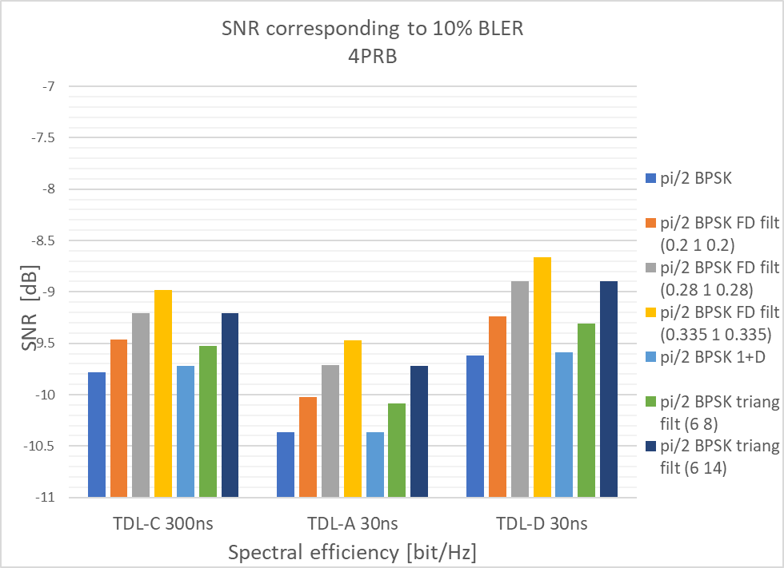
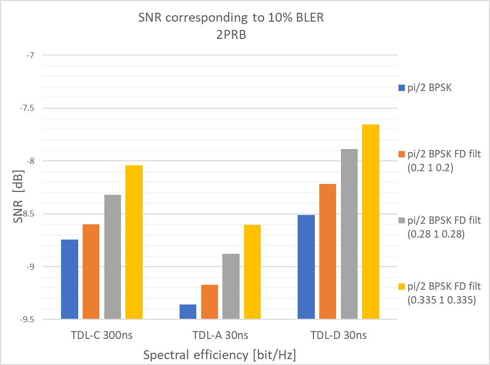
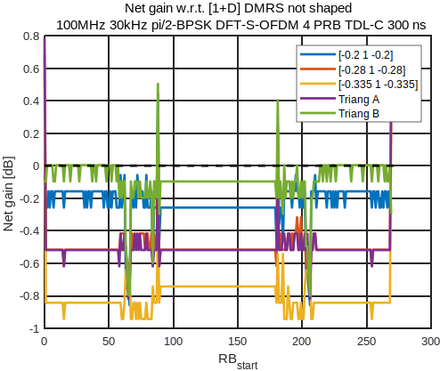
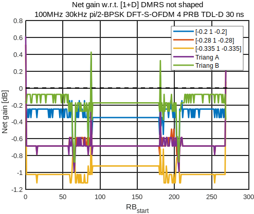

3GPP TR 38.868 V17.0.0 (2022-03)
Technical Report
3rd Generation Partnership Project;
Technical Specification Group Radio Access Network;
Optimizations of pi/2 BPSK uplink power in NR;
User Equipment (UE) radio transmission and reception;
(Release 17)
The present document has been developed within the 3rd Generation
Partnership Project (3GPP TM) and may be further elaborated
for the purposes of 3GPP.
The present document has not been subject to any approval process by the
3GPP Organizational Partners and shall not be implemented.
This Report is provided for future development work within 3GPP only.
The Organizational Partners accept no liability for any use of this
Specification.
Specifications and Reports for implementation of the 3GPP TM
system should be obtained via the 3GPP Organizational Partners'
Publications Offices.
Keywords
<NR V2X (vehicle-to-everything), Sidelink, Public safety, Proximity based Services>
3GPP
Postal address
3GPP support office address
650 Route des Lucioles - Sophia Antipolis
Valbonne - FRANCE
Tel.: +33 4 92 94 42 00 Fax: +33 4 93 65 47 16
Internet
http://www.3gpp.org
Copyright Notification
No part may be reproduced except as authorized by written
permission.
The copyright and the foregoing restriction extend to reproduction in
all media.
© 2022, 3GPP Organizational Partners (ARIB, ATIS, CCSA, ETSI, TSDSI, TTA, TTC).
All rights reserved.
UMTS™ is a Trade Mark of ETSI registered for the benefit of its members
3GPP™ is a Trade Mark of ETSI registered for the benefit of its
Members and of the 3GPP Organizational Partners
LTE™ is a Trade Mark of ETSI registered for the benefit of its Members
and of the 3GPP Organizational Partners
GSM® and the GSM logo are registered and owned by the GSM Association
Foreword 5
1 Scope 6
2 References 6
3 Definitions, symbols and abbreviations 6
3.1 Definitions 6
3.2 Symbols 6
3.3 Abbreviations 6
4 Background 7
4.1 Justification 7
4.2 Objective 8
5 Evaluation of link level simulation 8
5.1 Qualcomm link level simulation results 8
5.2 Huawei link level simulation results 11
5.3 Nokia link level simulation results 12
5.3.1 Spectral shaping transparent to gNB receiver 12
5.3.2 Spectral shaping known to gNB receiver 14
5.4 IITH, IITM, CEWiT, Reliance Jio, Tejas Networks link level simulation results 15
5.5 Intel link level simulation results 17
5.6 Vivo link level simulation results 20
6 Evaluation of Pulse shaping filters 22
6.1 Pulse shaping filter simulation results 23
6.1.1 Huawei simulation results for pulse shaping filter 23
6.1.2 Nokia simulation results for pulse shaping filters 24
6.2 Net gain analysis of combined Tx and Rx impacts 25
6.2.1 Nokia simulation results for net gain analysis of combined Tx and Rx impacts (w.r.t 1+D) DMRS not shaped 25
6.2.1.1 Net gain simulation results for TDL-C300ns 26
6.2.1.2 Net gain simulation results for TDL-A 30ns 28
6.2.1.3 Net gain simulation results for TDL-D 30ns 30
6.2.2 Nokia simulation results for net gain analysis of combined Tx and Rx impacts (w.r.t [0.2 1 0.2]) 32
6.2.2.1 Net gain simulation results for TDL-C300ns 33
6.2.2.2 Net gain simulation results for TDL-A 30ns 35
6.2.2.3 Net gain simulation results for TDL-D 30ns 37
6.2.3 Intel Tx + Rx link margin analysis 39
6.2.3.1 Tx + Rx combined link margin 39
6.2.3.2 Tx + Rx combined link margin (relative to MPR0 and maximum SNR) 41
6.2.4 Qualcomm Net link margin analysis 44
7 SAR mitigation solutions 46
8 Feasibility analysis of power enhancement 46
8.1 Qualcomm results for power enhancement 46
8.2 Nokia results for power enhancement 47
8.2.1 Power enhancement with respect to [1+D] filter with DMRS shaped 48
8.2.2 Power enhancement with respect to [1+D] filter with DMRS not shaped 52
8.2.3 Best filters per channel bandwidth 57
8.2.4 Minimum MPR w.r.t 29 dBm 62
8.3 IITH, IITM, CEWiT, Reliance Jio, Tejas Networks results for power enhancement 65
8.4 Intel results for power enhancement 66
8.5 Huawei results for power enhancement 68
8.5.1 MPR comparison results 68
8.5.2 Optimization of RB regions for MPR specifications 70
8.6 Skyworks results for power enhancement 72
8.6.1 Power enhancement results1 72
8.6.2 Power enhancement results2 77
8.7 Apple results for power enhancement 81
8.7.1 Results for power boost >2dB 81
8.7.2 Results for power boost between 1dB to 2dB 86
9 Agreements, conclusion and recommendations 90
9.1 RAN4 and RAN agreements 90
9.2 Conclusions 90
Annex A: Change history 92
This Technical Report has been produced by the 3rd Generation Partnership Project (3GPP).
The contents of the present document are subject to continuing work within the TSG and may change following formal TSG approval. Should the TSG modify the contents of the present document, it will be re-released by the TSG with an identifying change of release date and an increase in version number as follows:
Version x.y.z
where:
x the first digit:
1 presented to TSG for information;
2 presented to TSG for approval;
3 or greater indicates TSG approved document under change control.
y the second digit is incremented for all changes of substance, i.e. technical enhancements, corrections, updates, etc.
z the third digit is incremented when editorial only changes have been incorporated in the document.
This document is a technical report for optimization of pi/2 BPSK NR uplink power in Rel-17. The purpose is to evaluate the feasibility of increasing the UE’s uplink power in TDD bands for pi/2 BPSK modulation assuming use of existing UE power classes as indicated per band or band combination. The objectives are applicable to FR1 TDD bands n34, n39, n40, n41, n77, n78 and n79. The justification and objectives of this work item are outlined in section 4.1 and section 4.2.
The following documents contain provisions which, through reference in this text, constitute provisions of the present document.
- References are either specific (identified by date of publication, edition number, version number, etc.) or non‑specific.
- For a specific reference, subsequent revisions do not apply.
- For a non-specific reference, the latest version applies. In the case of a reference to a 3GPP document (including a GSM document), a non-specific reference implicitly refers to the latest version of that document in the same Release as the present document.
[1] 3GPP TR 21.905: "Vocabulary for 3GPP Specifications".
[2] 3GPP TR 30.007: "Guideline on WI/SI for new Operating Bands".
[3] 3GPP TS 38.101-1: "NR; User Equipment (UE) radio transmission and reception; Part 1: Range 1 Standalone".
[4] 3GPP TS 38.101-2: "NR; User Equipment (UE) radio transmission and reception; Part 2: Range 2 Standalone".
[5] 3GPP TS 38.101-3: "NR; User Equipment (UE) radio transmission and reception; Part 3: Range 1 and Range 2 Interworking operation with other radios".
For the purposes of the present document, the terms and definitions given in 3GPP TR 21.905 [1] and the following apply. A term defined in the present document takes precedence over the definition of the same term, if any, in 3GPP TR 21.905 [1].
For the purposes of the present document, the following symbols apply:
For the purposes of the present document, the abbreviations given in 3GPP TR 21.905 [1] and the following apply. An abbreviation defined in the present document takes precedence over the definition of the same abbreviation, if any, in 3GPP TR 21.905 [1].
ACLR Adjacent Channel Leakage Ratio
ACS Adjacent Channel Selectivity
AGC Automatic Gain Control
A-MPR Additional Maximum Power Reduction
BLER BLock Error Rate
BS Base Station
CBW Channel Bandwidth
CDF Cumulative Distribution Function
CP-OFDM Cyclic Prefix-OFDM
DMRS Demodulation Reference Signal
DSRC Dedicated Short-Range Communications
EIRP Equivalent Isotropically Radiated Power
EVM Error Vector Magnitude
FDD Frequency Division Duplex
FDM Frequency Division Multiplexing
FR1 Frequency Range 1
FR2 Frequency Range 2
ITS Intelligent Transportation System
LDPC Low Density Parity Check
LTE Long Term Evolution
LOS Line-Of-Sight
MPR Maximum Power Reduction
NF Noise Figure
NLOS Non-Line-Of-Sight
NR New Radio
OLPC Open Loop Power Control
PC Power Control
PRB Physical Resource Block
PRR Package Reception Ratio
ProSe Proximity-based Services
PSCCH Physical Sidelink Control CHannel
PSSCH Physical Sidelink Shared CHannel
REFSENS Reference Sensitivity
RF Radio Frequency
SCS Sub-Carrier Spacing
SINR Signal to Interference plus Noise Ratio
SL Sidelink
SNR Signal-to-Noise Ratio
TDD Time Division Duplex
TDM Time Division Multiplexing
UE User Equipment
UL Uplink
V2V Vehicle to Vehicle
V2X Vehicle to Everything
Coverage enhancement is a study item led by RAN1 for Rel-17. It has been identified that uplink channels are the bottleneck in many of the evaluated scenarios in terms of the coverage achieved. Given a fixed number of antennas and fixed MCS choices, an improvement in the uplink link budget is only possible through an increase in the UE’s UL power.
The current MPR tables may not fully exploit spectrum shaping of pi/2 BPSK waveforms. Meaningful reduction in MPR for certain waveforms could be achieved if UEs exclusively rely on ‘strong’ shaping. Increase in maximum achievable power may also be feasible relative to the MPR0 power level. For PC2 devices MPR1 is the output power level at which the ACLR=31 dBc obtained with a QPSK full RB DFT-S_OFDM waveform. The output power MPR0 is defined as, MPR0=MPR1+1dB.
Using precedent in Rel-15 and Rel-16 for high power transmissions, duty cycle restrictions will help maintain average power levels at 23 dBm for compliance with SAR requirements.
In this study item, we propose to exploit strong spectrum shaping to realize UL power gains for pi2BPSK waveforms.
The objective of this study is to evaluate the feasibility of increasing the UE’s uplink power in TDD bands for pi/2 BPSK modulation assuming use of existing UE power classes as indicated per band or band combination. The objectives are applicable to FR1 TDD bands n34, n39, n40, n41, n77, n78 and n79.
1. Identify achievable UE Tx power for pi/2 BPSK with the filter studied in this study item. [RAN4]
2. Evaluate SAR-related duty-cycle restrictions and reporting mechanisms [RAN4]
3. Identify filter characteristics necessary to enable the new power capability while ensuring good and robust BS receiver performance. [RAN4]
a. The choice of filters is up to UE implementations and transparent to the network
b. Evaluate possible pulse shaping filter requirement applicable to the identified new UE power capability if achievable [RAN4]
c. Identify if necessary, changes that are needed to EVM equalizer flatness mask requirements to capture necessary filter. Changes to the existing 14 dB p-p baseline to be assessed in relation to any potential gains in UL link performance while still ensuring robust BS receiver performance for all UEs in a cell. [RAN4]
Note: whether or not a new UE power class will be introduced for the identified achievable UE Tx power for pi/2 BPSK will be decided at the drafting stage of the following WI.
The following table gives the link level parameters that were considered in the simulations:
Table 5.1.1: Link level simulation parameters
| Parameter | Value |
|---|---|
| Pulse shaping filter | Filter configuration conforms to 38.101-1 |
| Channel model | TDL-A30ns |
| MCS Code rate | 0 |
| Waveform | DFTS OFDM with pi/2 BPSK filtered by same filter as for Rel-16 DMRS |
| # of DMRS symbols/slot | 2 |
| # of data symbols/slot | 12 |
| # of RBs | 2, 4, 8, 16 |
| TX/RX configuration | 1TX/4RX |
| BW | 100 MHz |
| UE speed | 3 km/h |
| SCS | 30 kHz |
| HARQ configuration | No retransmissions |
Below are the link simulation results for 2, 4, 8 and 16 RBs
Figure 5.1.1: Waveform with number of RB=2
Figure 5.1.2: Waveform with number of RB=4
Figure 5.1.3: Waveform with number of RB=8
Figure 5.1.4: Waveform with number of RB=16
For a BLER=10-1 the following is observed from the simulation results:
Table 5.1.2: Filter degradation as a function of RB#
| Waveform RB # | SNR @ BLER=10-1 No filter | SNR @ BLER=10-1 with filter | Delta (dB) |
|---|---|---|---|
| 2 | -6.9 | -6.5 | 0.4 |
| 4 | -8.7 | -8.5 | 0.2 |
| 8 | -9.9 | -9.7 | 0.2 |
| 16 | -10.8 | -10.7 | 0.2 |
Based on this data the maximum degradation due to pulse shaping is seen to be 0.4 dB.
The Table 2 below is the recommended parameter list for link level simulation.
Table 5.2.1: Recommended Parameter list
| Parameter | Value |
|---|---|
| Pulse shaping filter | Filter configuration conforms to 38.101-1 |
| Channel model | TDL-C300ns, TDL-A30, TDL-D30 |
| MCS | 0 |
| Code rate | 1/8, 1/4, 1/3, 1/2, 2/3 |
| Waveform | DFTS OFDM with pi/2 BPSK filtered by same filter as for Rel-16 DMRS |
| # of DMRS symbols/slot | 2 |
| # of data symbols/slot | 12 |
| # of RBs | [2, 4, 8, 16, 64] |
| TX/RX configuration | 1TX/4RX |
| BW | 100 MHz |
| UE speed | 3 km/h |
| SCS | 30 kHz |
| HARQ configuration | No retransmissions |
With the simulation assumptions in Table 2, Figure below shows the BLER performance for NLoS channel with narrow (100MHz, 8 PRB) and large bandwidth allocation (100MHz, 64 PRB), respectively.
(a) Small RB allocation (8PRB) (b) Large RB allocation (64PRB)
Figure 5.2.1: BLER performance of different shaping filters
Simulation parameters are shown in Table 3 and the link simulation results for 2-64 PRB bandwidths in the below figures.
Table 5.3.1.1: Simulation assumptions
| Carrier frequency | 4GHz |
|---|---|
| Channel BW | 100MHz |
| SCS | 30kHz |
| Channel model | TDL-C 300ns, TDL-A 30ns, TDL-D 30ns |
| UE speed | 3km/h |
| Channel estimation | Frequency domain |
| Number of Tx antennas | 1 |
| Number of Rx antennas | 4 |
| DMRS config | Low PAPR sequence type 2, 2 symbols |
| Waveform | DFT-S-OFDM |
| HARQ config | No retransmissions |
| Num PRBs | 2,4,8,16,64 |
| MCS | 0 |
| Channel | PUSCH, 14 OFDM symbols |
| Frequency hopping | No |
| BLER | 10% |
| Spectral shaping filter | 3-tap, FD implementation 1+D (not used for DMRS symbols) Triangular filters |


Figure 5.3.1.1: Required SNR for 10% BLER for different channel profiles
Based on company results the maximum degradation due to pulse shaping is seen to be up to 0.87dB for all 3 channel models.
The [0.335, 1.0, 0.335] spectral shaping filter used in this paper is the most aggressive 3-tap filter that meets the current spectral flatness requirements as shown in our paper from RAN4#99e [R4-2109742]. Less aggressive 3-tap filters are included too. 3-tap filter is implemented in frequency domain due to lower complexity. Simulation parameters are shown in Table 5.3.2.1 and the link simulation results for 2-64 PRB bandwidths in Figure 5.3.2.1. Simulation parameters are according to agreed way forward [R4-2108018].
Table 5.3.2.1: Simulation assumptions
| Carrier frequency | 4GHz |
|---|---|
| Channel BW | 100MHz |
| SCS | 30kHz |
| Channel model | TDL-C 300ns, TDL-A 30ns, TDL-D 30ns |
| UE speed | 3km/h |
| Channel estimation | Frequency domain |
| Number of Tx antennas | 1 |
| Number of Rx antennas | 4 |
| DMRS config | Low PAPR sequence type 2, 2 symbols |
| Waveform | DFT-S-OFDM |
| HARQ config | No retransmissions |
| Num PRBs | 2,4,8,16,64 |
| MCS | 0 |
| Channel | PUSCH, 14 OFDM symbols |
| Frequency hopping | No |
| BLER | 10% |
| Spectral shaping filter | 3-tap, FD implementation |

Figure 5.3.2.1: Required SNR for 10% BLER for different channel profiles
Observation 1: Link loss due to more aggressive spectral shaping filtering is higher with small bandwidths.
Observation 2: For given number of PRBs, the performance difference between the used filters is quite similar for all the channel models.
Table 5.4.1: Simulation parameters
| Parameter | Value |
|---|---|
| Pulse shaping filter | 1+D |
| Channel model | TDL-D 30, TDL-A30 |
| MCS | 0 |
| Waveform | DFTS OFDM with pi/2 BPSK filtered by same filter as for Rel-16 DMRS |
| # of DMRS symbols/slot | 2 |
| # of data symbols/slot | 12 |
| # of RBs | 1,4,16 |
| TX/RX configuration | 1TX/4RX |
| BW | 100 MHz |
| SCS | 30 kHz |
| HARQ configuration | No retransmissions |
Table 5.4.2: SNR comparison with and without 1+D spectrum shaping at 10^-1 BLER in TDLD-30
| Allocation Size | W/O Filter | With 1+D Filter | Delta (dB) |
|---|---|---|---|
| 1 PRB | -4.68 | -4.39 | 0.29 |
| 4 PRB | -9.667 | -9.55 | 0.117 |
| 16 PRB | -10.49 | -10.484 | 0.006 |
Figure 5.4.1: BLER for 1 PRB allocation with and without 1+D spectrum shaping in TDLD-30

Figure 5.4.2: BLER for 4 PRB allocation with and without 1+D spectrum shaping in TDLD-30

Figure 5.4.3: BLER for 16 PRB allocation with and without 1+D spectrum shaping in TDLD-30
Simulation results for TDLA-30ns is given in the following table
Table 5.4.3: SNR comparison with and without 1+D spectrum shaping at 10^-1 BLER in TDLA-30
| Allocation Size | W/O Filter | With 1+D Filter | Delta (dB) |
|---|---|---|---|
| 1 PRB | -3.7 | -3.5 | 0.2 |
| 4 PRB | -8.05 | -7.95 | 0.1 |
| 16 PRB | -8.24 | -8.24 | 0 |
Observation: The loss due to 1+D spectrum shaping does not exceed 0.3 dB.
Table 5.5.1 provides a summary of link-level simulation assumptions. The results of analysis of pulse-shaping filtering impact on PUSCH demodulation performance are summarized in Tables 5.5.2 to 5.5.5, which provide estimated PUSCH SNR loss @ 1% BLER due to filtering. Figure 5.5.1 provides illustration of the obtained performance in TDLC300 channel model.
Table 5.5.1: Simulation assumptions
| Parameter | Value |
|---|---|
| Pulse shaping filters | [0.2 1 0.2] [0.28 1 0.28] [0.335 1 0.335] |
| Channel model | AWGN, TDL-C300ns, TDL-A30, TDL-D30 |
| MCS | 0 (MCS Table 1) |
| Waveform | DFTS OFDM with pi/2 BPSK filtered by same filter as for Rel-16 DMRS |
| DMRS configuration | Rel-16 low PAPR DMRS sequence |
| # of DMRS symbols/slot | 2 |
| # of Data symbols/slot | 12 |
| # of RBs | 2, 4, 8, 16, 64 |
| TX/RX configuration | 1TX/4RX (low correlation) |
| CBW | 100 MHz |
| SCS | 30 kHz |
| HARQ configuration | No retransmissions |
| Test metric | 1% BLER |
Table 5.5.2: SNR loss compared to scenario without pulse-shaping in AWGN, dB
| Parameter | Filters | ||
|---|---|---|---|
| [0.2 1 0.2] | [0.28 1 0.28] | [0.335 1 0.335] | |
| 2 PRB | 1.1 | 1.7 | 2.2 |
| 4 PRB | 0.3 | 0.9 | 1.5 |
| 8 PRB | 0.4 | 1.1 | 1.6 |
| 16 PRB | 0.5 | 1.1 | 1.7 |
| 64 PRB | 0.7 | 1.3 | 1.8 |
Table 5.5.3: SNR loss compared to scenario without pulse-shaping in TDLA30, dB
| Parameter | Filters | ||
|---|---|---|---|
| [0.2 1 0.2] | [0.28 1 0.28] | [0.335 1 0.335] | |
| 2 PRB | 1.2 | 1.2 | 2.2 |
| 4 PRB | 0.3 | 0.3 | 1.5 |
| 8 PRB | 0.1 | 0.1 | 1.5 |
| 16 PRB | 0.5 | 0.5 | 1.8 |
| 64 PRB | 0.7 | 0.7 | 1.8 |
Table 5.5.4: SNR loss compared to scenario without pulse-shaping in TDLC300, dB
| Parameter | Filters | ||
|---|---|---|---|
| [0.2 1 0.2] | [0.28 1 0.28] | [0.335 1 0.335] | |
| 2 PRB | 1.0 | 1.6 | 2.2 |
| 4 PRB | 0.8 | 1.5 | 1.9 |
| 8 PRB | 0.6 | 1.5 | 2.2 |
| 16 PRB | 0.4 | 1.1 | 1.9 |
| 64 PRB | 0.8 | 1.3 | 1.7 |
Table 5.5.5: SNR loss compared to scenario without pulse-shaping in TDLD30, dB
| Parameter | Filters | ||
|---|---|---|---|
| [0.2 1 0.2] | [0.28 1 0.28] | [0.335 1 0.335] | |
| 2 PRB | 1.1 | 1.7 | 2.2 |
| 4 PRB | 0.1 | 0.6 | 1.2 |
| 8 PRB | 0.1 | 0.6 | 1.2 |
| 16 PRB | 0.4 | 0.9 | 1.4 |
| 64 PRB | 0.8 | 1.2 | 1.6 |
| Figure 5.5.1: BLER vs SNR for TDL-C channel model | |
Based on the obtained results we make the following observations:
1) Pulse shaping result in PUSCH demodulation performance loss with larger performance degradation observed for more aggressive filters. Up to 2.2 dB SNR loss is observed for [0.335 1 0.335] filter.
2) The largest degradation is observed for small PRB allocations and the reduces in case of using larger PRB allocations
3) There is a negligible performance loss dependency on channel model at least with practical receive processing
we provide link level simulation results for pi/2 BPSK based on the below parameter list in table 5.6.1.
Table 5.6.1: Recommended Parameter list
| Parameter | Value |
|---|---|
| Pulse shaping filter | Filter configuration conforms to 38.101-1 |
| Channel model | TDL-C300ns, TDL-A30, TDL-D30 |
| MCS | 0 |
| Waveform | DFTS OFDM with pi/2 BPSK filtered by same filter as for Rel-16 DMRS |
| # of DMRS symbols/slot | 2 |
| # of data symbols/slot | 12 |
| # of RBs | [2, 4, 8, 16, 64] |
| TX/RX configuration | 1TX/4RX |
| BW | 100 MHz |
| UE speed | 3 km/h |
| SCS | 30 kHz |
| HARQ configuration | No retransmissions |
The Bler curves for different configuration parameters of three-tap filter are shown is figure 5.6.2.
The frequency domain characteristic curves are shown in figure 5.6.1. It can be observed that for the more aggressive spectral shape filter, the curve is narrower in the frequency domain. And it also shows that the correlation between time-domain data would be greater and the PAPR would be smaller. Therefore, it is helpful to boost the power of UE output.
However, for the spectral shape filter, the receive demodulation performance would also be reduced compared with no filter since the FDSS would cause non-uniform distribution of SNR on each subcarrier and impact the channel equalization.
Figure 5.6.1: Frequency characteristics of different spectral shape filters
Observation 1: For the more aggressive spectral shape filter, the PAPR would be smaller
 |
|---|
 |
|---|
Figure 5.6.2: Bler performance of different spectrum shape filters
It can be observed that for all channel model (e.g., TDL-A, TDL-C, TDL-D) and RBs (2RB and 8RB), for the more aggressive spectral shape filter (e.g., [0.33 1 0.33]), the Bler performance would be worse. In addition, the maximum SNR difference between no-filter and FDSS filter when the Bler is 10% is about is 1dB.
Observation 2: For all channel model (e.g., TDL-A, TDL-C, TDL-D) and RBs (2RB and 8RB), for the more aggressive spectral shape filter (e.g., [0.33 1 0.33]), the Bler performance would be worse.
Observation 3: The maximum SNR difference between no-filter and FDSS filter when the Bler is 10% is about 1dB.
Based on the above analyse, we can see that it is very necessary to select the appropriate filter, PAPR performance and Bler performance must be taken into consideration at the same time.
Observation 4: PAPR performance and Bler performance must be taken into consideration at the same time for FDSS filter selection.
Figure 6.1.1.1 illustrates the evaluated FDSS filter in term of the spectrum shape for the example of allocation of 20 PRBs.
Figure 6.1.1.1: Spectrum shape of the FDSS filters
To further elaborate our consideration and understanding of shaping filter, the comparison of different implementation is provided in figures below.
Figure 6.1.1.2: PAPR of different shaping filters (CBW 100MHz, 64RB)
Figure 6.1.1.3: PAPR of different shaping filters (CBW 10MHz, 8RB)
These results indicate that the PAPR for a given CCDF is lower for more aggressive pulse shaping filtering.
The following figure shous the tested filters.
Figure 6.1.2.1: Tested filters
0.335 is the most aggressive 3-tap filter that meets the current spectral flatness requirements, less aggressive 3-tap filters are included too (0.2 and 0.28). Triang A is the most aggressive triangular window that meets the current spectral flatness requirements, and Triang B is a less aggressive triangular window, with similar frequency shape as the 0.2 3-tap filter.
A subset of the results for the evaluation of the pulse shaping filters from the transmitter point of view from [3] is shown in the following figures, where the filter that provides the highest output power is selected for each allocation configuration.
Figure 6.1.2.2: Shaping filter that provides the maximum output power for (left) 10 MHz channel BW, and (right) 50 MHz channel BW
Conclusions of the simulations (all available results are not included here due to vast amount of them but they can be found in [3],):
For all the tested channel bandwidth, and allocation configurations, there are filters that conform to 38.101-1 Rel-16 requirements that offer larger or same output power than the [1+D] filter when the DMRS are shaped.
For all the tested channel bandwidth, and allocation configurations, there are filters that conform to 38.101-1 Rel-16 requirements that offer larger or same output power than the [1+D] filter when the DMRS are not shaped.
Note: The LS from RAN to RAN4 [RP-213655] states that both the data and DMRS should be filtered. The results in this section were generated prior to this decision and therefore do not conform to the instruction provided in this LS
In order to characterize the filters, it is needed to consider both the transmitter performance (i.e., the achievable output power) from our paper [3], and the link level performance obtained in [4]. With that information, it is possible to compute the net gain with respect to a reference filter as:
\[Net\ Gain\ \lbrack dB\rbrack = \left( Pout_{Filter\ i} - Pout_{Ref.\ filter} \right) + \left( SNR10\%_{Ref.\ filter} - SNR10\%_{Filter\ i} \right)\ \]
Where \(Pout_{Filter\ i}\) is the output power of the filter being compared against the reference filter, \(Pout_{Ref.\ filter}\) is the output power of the reference filter, \(SNR10\%_{Ref.\ filter}\) is the required SNR to achieve 10% BLER of the reference filter, and \(SNR10\%_{Filter\ i}\) is the required SNR to achieve 10% BLER of the filter being compared against the reference filter.
The following slides show the net gain of the filters with respect to the [1+D] filter with DMRS not shaped, for pi/2 BPSK considering the transmitter [3] and link level [4] performance for the following allocations and channels:
2, 4, 8, 16 and 64 PRB
TDL-C 300 ns, TDL-A 30 ns and TDL-D 30 ns
Filters tested:
[-0.2 1 -0.2], [-0.28 1 -0.28], [-0.335 1 -0.335], Triang A [6 14] and Triang B [6 8]
The tested filters assume that the filter is transparent to the gNB, and the DMRS are shaped. For the [1+D], matched filter is used in reception.
For 2 and 4 PRB, [1+D] without DMRS shaped performs better than all the filters in center allocations (0.1-0.2 dB better than the 0.2 filter and 0-0.1 dB better than Triang B).
For 8 and 16 PRB, [1+D] without DMRS shaped is never the best for any allocation. Triang B is the best filter, providing gain for most of the possible allocations within the channel.
For 64 PRB, in central allocations, the performance is the same as Triang B. In edge band allocations, the 0.335 filter provides up to 0.9 dB gain.
For small allocation sizes, it must be noted that less aggressive filters perform better than aggressive filters in central band allocations.
There is not a single best solution for all the evaluated cases. Depending on the allocation configuration, different filters (i.e., more or less aggressive) perform differently.
Results are given in the below figures
Figure 6.2.1.1.1: 2 PRB

Figure 6.2.1.1.2: 4 PRB
Figure 6.2.1.1.3: 8 PRB
Figure 6.2.1.1.4: 16 PRB
Figure 6.2.1.1.5: 64 PRB
Observation: For allocation sizes ≤ 16 PRB, less aggressive filters perform better than aggressive filters in central band allocations.
For 2 and 4 PRB, [1+D] without DMRS shaped performs better than all the filters in all allocations (0.1-0.2 dB better than the Triang B filter).
For 8 and 16 PRB, [1+D] without DMRS shaped is never the best for any allocation position.
For 64 PRB, in central allocations, the performance is the same as Triang B. In edge band allocations, the 0.335 filter provides up to 0.8-0.9 dB gain.
For small allocation sizes, it must be noted that less aggressive filters perform better than aggressive filters in central band allocations.
There is not a single best solution for all the evaluated cases. Depending on the allocation configuration, different filters (i.e., more or less aggressive) perform differently.
Results are given in the below figures
Figure 6.2.1.2.1: 2 PRB
Figure 6.2.1.2.2: 4 PRB
Figure 6.2.1.2.3: 8 PRB
Figure 6.2.1.2.4: 16 PRB
Figure 6.2.1.2.5: 64 PRB
For 2 and 4 PRB, [1+D] without DMRS shaped performs better than all the filters in all allocations (0.1-0.2 dB better than the Triang B filter)
For 8 and 16 PRB, [1+D] without DMRS shaped is never the best for any allocation. In central band allocations, Triang B provides gain. 0.335 filter provides up to 1 dB gain in edge band allocations.
For 64 PRB, in central band allocations Triang B provides gain. In edge allocations, Triang A, 0.28 and 0.335 filters provide up to 0.8 dB gain.
For small allocation sizes, it must be noted that less aggressive filters perform better than aggressive filters in central band allocations.
There is not a single best solution for all the evaluated cases. Depending on the allocation configuration, different filters (i.e., more or less aggressive) perform differently.
Results are given in the below figures
Figure 6.2.1.3.1: 2 PRB

Figure 6.2.1.3.2: 4 PRB
Figure 6.2.1.3.3: 8 PRB
Figure 6.2.1.3.4: 16 PRB
Figure 6.2.1.3.5: 64 PRB
The most aggressive filters have up to 0.6-0.8 dB loss with respect to the less aggressive filters in the small allocations (2, 4, 8 PRB in the evaluation) and central band allocations. These results suggest that following the agreements on the WF after RAN4#101e [R4-2120057], and the SI objectives [RP-213535] (objective 3. c) there is a need for different spectral flatness requirements for the filters based on the allocation within the channel band. It would be beneficial to have tighter spectral flatness requirements for small allocations band to optimize the net gain.
Observation 1: The most aggressive filters have up to 0.6-0.8 dB loss with respect to the less aggressive filters in the small allocations
Observation 2: For allocation sizes ≤ 16 PRB, less aggressive filters perform better than aggressive filters in terms of achievable output power and link performance.
Observation 3: There is not a single solution for all the evaluated cases. Depending on the allocation configuration, different filters (i.e., more or less aggressive) perform differently.
Observation 4: Based on the previous agreement in RAN4#101bis-e [R4-2202386], if spectrum flatness requirements are not tightened for small allocations, net gain cannot be guaranteed.
For 2 and 4 PRB, the two less aggressive filters tested (Triang B and 0.2) show the best performance for all the allocations within the channel.
For 8 and 16 PRB, Triang B is the best filter, providing gain for most of the possible allocations within the channel, except in the edge allocations, where more aggressive filters offer gains of up to 1 dB.
For 64 PRB, in central allocations, the performance is the best for Triang B. In edge band allocations, the 0.335 filter provides up to 1 dB gain.
For small allocation sizes, it must be noted that less aggressive filters perform better than aggressive filters.
Results are given in the below figures
Figure 6.2.2.1.1: 2 PRB
Figure 6.2.2.1.2: 4 PRB
Figure 6.2.2.1.3: 8 PRB
Figure 6.2.2.1.4: 16 PRB
Figure 6.2.2.1.5: 64 PRB
For 2 and 4 PRB, the two less aggressive filters tested (Triang B and 0.2) show the best performance for all the allocations within the channel.
For 8 and 16 PRB, Triang B is the best filter, providing gain for most of the possible allocations within the channel, except in the edge (or outer) allocations, where more aggressive filters offer gains of up to 1.3 dB.
For 64 PRB, in central allocations, Triang B offers the best performance, with the rest of the filters offering the same net gain. In edge band allocations, the 0.335 filter provides up to 0.8-1.1 dB gain.
For small allocation sizes, it must be noted that less aggressive filters perform better than aggressive filters.
Figure 6.2.2.2.1: 2 PRB
Figure 6.2.2.2.2: 4 PRB
Figure 6.2.2.2.3: 8 PRB
Figure 6.2.2.2.4: 16 PRB
Figure 6.2.2.2.5: 64 PRB
For 2 and 4 PRB, the two less aggressive filters tested (Triang B and 0.2) show the best performance for all the allocations within the channel.
For 8 and 16 PRB, Triang B is the best filter, providing gain for most of the possible allocations within the channel, except in the edge (or outer) allocations, where more aggressive filters offer gains of up to 1.4 dB.
For 64 PRB, in central allocations, Triang B offers the best performance, with the rest of the filters offering the same net gain. In edge band allocations, the 0.335 filter provides up to 0.7-1 dB gain.
For small allocation sizes, it must be noted that less aggressive filters perform better than aggressive filters.
Figure 6.2.2.3.1: 2 PRB
Figure 6.2.2.3.2: 4 PRB
Figure 6.2.2.3.3: 8 PRB
Figure 6.2.2.3.4: 16 PRB
Figure 6.2.2.3.5: 64 PRB
Table 6.2.3.1 provides a summary of link-level simulation assumptions. NR design assumes that pi/2 BPSK spectral shaping on UE side is performed on both data and DMRS symbols and, hence, the filtering is transparent to the gNB receiver. Three filters [0.2 1 0.2], [0.28 1 0.28], and [1+D] were used as example of least, moderate and most aggressive filtering respectively based on frequency roll-off. A single PC2 PA was used in the Tx chain and was calibrated to 1dB MPR for DFT-s-OFDM, QPSK, BW=20MHz, 100RB with 4 dB post PA loss in order to be comparable with other simulation results in this study item. TDLC300 and TDLA30 channel models were used for evaluations and SNR @ 10% BLER was used as a test metric.
Table 6.2.3.1: Tx + Rx Simulation Assumptions
| Parameter | Value |
|---|---|
| Power Amplifier | Single PC2 PA |
| PA Calibration | 1dB MPR: DFT-s-OFDM QPSK 20MHz, 100RB with 4 dB post PA loss |
| Pulse shaping filters | [0.2 1 0.2] [0.28 1 0.28] [1+D] |
| Channel model | TDL-C300ns, TDL-A30ns, |
| MCS | 0 (MCS Table 3) |
| Waveform | DFTS OFDM with pi/2 BPSK filtered by same filter as for Rel-16 DMRS |
| DMRS configuration | Rel-16 low PAPR DMRS sequence |
| # of DMRS symbols/slot | 2 |
| # of Data symbols/slot | 12 |
| TX/RX configuration | 1TX/4RX (low correlation) |
| CBW | 20 MHz |
| SCS | 30 kHz |
| HARQ configuration | No retransmissions |
In order to have good comparison between the different filters and channel models it is necessary to clearly define Net Tx + Rx Gain. One way to evaluate Tx+Rx link margin is to compare delta of performance with a filter against the same setup using no filter. This is done in the clause 6.2.3.1 and allows for comparison in filter performance. However, it is also useful to analyse absolute performance of the achievable link budget. This is done in clause 6.2.3.2.
In this section we evaluate the Tx + Rx combined link margin delta of using a filter to no filter. The three pulse shaping filters used are again [0.20 1 0.2], [0.28 1 0.28] and [1+D]. Two different channel models, TDLC300 and TDLA30 are used to highlight the effect of the channel on pulse shaping filter behavior. In the three following figures, simulation results using the pulse shaping filter are compared with the same exact setup to no pulse shaping filter and the performance difference is measured in dB. The formula for link margin delta used was:
\[Link\ Margin\ delta\ \lbrack dB\rbrack = \left( Tx\ Pout_{Filter\ i} - Tx\ Pout_{no\ filter} \right) + \left( Rx\ SNR10\%_{no\ filter} - Rx\ SNR10\%_{Filter\ i} \right)\]
Positive dB represent a combination of higher Tx power and better Rx SNR whereas negative dB represent lower Tx power and lower SNR. It is noted that in all cases, adding a pulse shaping filter is done with the performance tradeoff of slightly lower SNR due to the blind Rx equalization process.
Figure 6.2.3.1.1: Tx + Rx Link Margin filter delta for [0.2 1 0.2]. (a) TDL-C300ns case, (b) TDL-A30ns case
Figure 6.2.3.1.1 shows the Tx + Rx link margin delta for [0.2 1 0.2]. For this filter, it can be seen that link margin performance is improved by up to 2.5dB for all outer RB locations. For inner RB locations, pulse filtering provides little benefit to Tx performance, yet does reduce Rx performance as the equalizer must blindly accommodate the filtering. Thus, for the TDL-C300nS channel model, the RBs mostly represent negative link margin delta of (-0.1dB to -0.2dB) (blueish shades). For the TDL-A30nS case, there are fewer negative link margin locations as the Rx equalizer performance is less degraded by this channel model.
Figure 6.2.3.1.2: Tx + Rx Link Margin filter delta for [0.28 1 0.28]. (a) TDL-C300ns case, (b) TDL-A30ns case
In Figure 6.2.3.1.2, the Tx + Rx link margin delta for [0.28 1 0.28] is seen. For this filter, outer RBs achieve slightly higher link margin delta. This is because the sharper filter improves ACLR for outer RBs compared to the [0.2 1 0.2] case. However, for inner RBs the filtering does not improve the Tx performance, while the Rx performance is more negatively impacted by the more aggressive filter. For the TDL-A30nS case, there are fewer negative link margin locations than for the TDL-C300nS case as the Rx equalizer performance is less degraded by the channel model.
Figure 6.2.3.1.3: Tx + Rx Link Margin filter delta for [1+D]. (a) TDL-C300ns case, (b) TDL-A30ns case
In Figure 6.2.3.1.3, the Tx + Rx link margin delta for [1+D] is seen. For this more aggressive filter, outer RBs achieve link margin delta nearly as high as the [0.28 1 0.28] case and better than the [0.2 1 0.2] case. This also is because the sharper filter improves ACLR for outer RBs compared to the [0.2 1 0.2] case. However, for inner RBs, where the filtering does not improve the Tx performance, this filter shows the lowest Rx performance and has the most negative link margin delta compared to no filter.
In this analysis, we are interested in evaluating the regions of operation on the 2D MPR figures to understand which operating regions have the highest combined Tx + Rx link performance. Tx output may range between 23dBm to 28dBm, Rx SNR for Pi/2BPSK may range from -13 to -5dB and there is also the path loss. SNR varies with LCRB and tends to be best for large LCRBs and degrade for small LCRBs. For this analysis, we normalize to zero value for MPR0 (26dBm) Tx power and we normalize Rx SNR for the highest achievable value (LCRB=50) with no filter. By normalizing the Rx with the largest LCRB case with no filter which is the best case, we can see the small trade-offs between filter performance.
\[Link\ Margin\ \ \lbrack dB\rbrack = \left( Tx\ Pout_{Filter\ i} - MPR0\ (26dBm) \right) + \left( Rx\ SNR10\%_{max\ with\ no\ filter} - Rx\ SNR10\%_{Filter\ i} \right)\]
In the following figures Tx + Rx combined link margin is represented; positive dB represent better performance in terms of higher Tx power and/or better SNR.
Figure 6.2.3.2.1: Tx + Rx Link Margin above Tx PC2 (26dBm) and Rx SNR for LCRB=50 for [0.2 1 0.2]. (a) TDL-C300ns case, (b) TDL-A30ns case
Figure 6.2.3.2.2: Tx + Rx Link Margin above Tx PC2 (26dBm) and Rx SNR for LCRB=50 for [0.28 1 0.28]. (a) TDL-C300ns case, (b) TDL-A30ns case
Figure 6.2.3.2.3: Tx + Rx Link Margin above Tx PC2 (26dBm) and Rx SNR for LCRB=50 for [1+D]. (a) TDL-C300ns case, (b) TDL-A30ns case
All six of the plots in Figure 6.2.3.2.1 - 6.2.3.2.3 have some common trends. In all cases the lower 12% of LCRB cases (LCRB≤6 for CBW=20MHz) have at least some negative link margins. For these small LCRBs, the degradation in equalization performance exceeds any gains in Tx output power had by using Pi/2BPSK.
Observation 1: In all cases simulated, the lower 12% of LCRB cases (LCRB ≤ 5 for CBW=20MHz) have at least some negative link margins for the channel models evaluated.
This is due to fact that small RBs are more easily impacted by sharp fades from the channel models. It can also be observed that this effect is more severe for the TLD-C300nS channel model than the TLD-A30nS model.
The largest 12% of LCRBs cases (LCRB ≥ 45 for CBW=20MHz) have slightly lower link performance than the middle LCRBs, but only by 0.5dB to 1.0dB less link margin. This is due to ACLR/SEM limitation on the Tx side.
Observation 2: The link margin is the highest for a small triangle of middle LRCBs above and below 12% of the top and bottom edges, and with the peak values in the centre at LCRB near 40% of LCRBmax.
It is also noted that the left and right edge RBs within 8% of LCRBmax also have degraded link margin due to ACLR/SEM limitations on the Tx side.
Table 6.2.3.2.1: Selected Link Margin values from the TDL-A30ns case for comparison
| Link Margin (dB) | ||||
|---|---|---|---|---|
| Filter | 40RB6 | 20RB16 | 10RB21 | Max |
| [0.2 1 0.2] | 2.2 | 2.8 | 2.2 | 2.9 |
| [0.28 1 0.28] | 2.6 | 2.6 | 2.0 | 2.7 |
| [1+D] | 2.5 | 2.5 | 1.8 | 2.6 |
Next, we compare between the three filters. Table 6.2.3.2.1 shows some specific values selected from the Figures 6.2.3.2.1 – 6.2.3.2.3. The first observation is that there isn’t a significant difference in Tx + Rx link performance between the three filters. There is only 0.3dB difference between the least aggressive and the most aggressive filter.
For max Link margin the [0.2 1 0.2] filter achieves the highest value. This is because the Rx equalization is simplest with the flattest, least aggressive filter.
Table 6.2.3.2.2: Link Margin values for LCRB = 40 for the TDL-A30ns case for comparison
In Table 6.2.3.2.2, values are shown for each filter for the LCRB = 40 case. This represents the upper region of the 2D plot. In the table it is seen that the [0.28 1 0.28] filter has the highest value and the widest region of high values. This phenomenon can also be seen comparing Figure 6.2.3.2.2 to Figure 6.2.3.2.1, 6.2.3.2.3. The inner triangle region is largest for the [0.28 1 0.28] filter.
Observation 3: The [0.2 1 0.2] filter achieves the highest value for link margin. However, the [0.28 1 0.28] filter has the largest inner triangle region of high values, making it the best compromise filter. The overall difference in performance of different filters is rather limited and as stated in the updated SI objectives the actual filter design can be transparent to the network.
In summary, two methods of evaluating Tx + Rx link margin were presented. The first, Tx + Rx absolute link margin shows the RB regions with highest combined performance. All of the RBs within the region 12% from top or bottom and 8% from the edges. The middle aggressive [0.28 1 0.28] filter gives the highest overall link margin for the widest range of RBs. The second Tx + Rx link margin delta compares the filter performance. In this case, we see that the middle aggressive [0.28 1 0.28] filter also gives the highest performance for outer RB locations. However, for inner RB locations no filter or the least aggressive [0.2 1 0.2] filter is best for avoiding Rx performance degradation due to filtering.
The below table shows the average output power above MPR0 observed for various filter shapes for edge, inner and outer PRB allocations using a DFT-S-OFDM pi/2 BPSK waveform with pi/2 BPSK DMRS. Results indicate that the output power above MPR0 increases with the aggressiveness of the shaping filter and this increase in output power is not limited to less aggressive filters. This table also gives the delta increase in output power between no filtering i.e. [0 1 0] and a filter with [X 1 X] coefficients where X=0.1, 0.2 and 0.3. Measurements indicated that the worst-case output power increase above MPR0 for filter coefficients [0.28 0.91 0.28] was 0.9 dB. This difference can be attributed to a more conservative PA model compared to the actual measured hardware.
Table 6.2.4.1 – Output power increase above MPR0 and output power increase from [0 1 0] 🡪 [X 1 X]
| Filter coefficients [X 1 X] | Average output power above MPR0 | [0 1 0] 🡪 [X 1 X] Delta power | |||||
|---|---|---|---|---|---|---|---|
| X | edge | outer | inner | edge | outer | inner | |
| (dB) | (dB) | (dB) | (dB) | (dB) | (dB) | ||
| 0 – No filtering | 0.2 | 0.1 | 0.2 | ||||
| 0.1 | 0.3 | 0.35 | 0.3 | 0.1 | 0.3 | 0.1 | |
| 0.2 | 0.35 | 0.42 | 0.4 | 0.2 | 0.3 | 0.2 | |
| 0.3 | 0.37 | 0.45 | 0.45 | 0.2 | 0.4 | 0.3 | |
Observation1: The output power above MPR0 increases with the aggressiveness of the shaping filter
The table below shows the SNR @0.1 BLER as a function of the #PRBs and the filter coefficient X for TDLA 30ns. Results indicate that for a given #PRB the SNR @0.1BLER changes at most by 0.2 dB as the aggressiveness of the shaping filter is increased. Results do not show any significant benefit with less aggressive shaping filter profiles for narrow RBs.
Table 6.4.2.2 – SNR @0.1 BLER for various filter coefficients and SNR change when comparing [0 1 0] to [X 1 X]
| SNR @0.1 BLER | [0 1 0] 🡪 [X 1 X] Delta SNR | |||||||
|---|---|---|---|---|---|---|---|---|
| X=0 | X=0.1 | X=0.2 | X=0.3 | X=0 🡪0.1 | X=0 🡪0.2 | X=0 🡪0.3 | ||
| RB# | (dB) | (dB) | (dB) | (dB) | RB# | (dB) | (dB) | (dB) |
| 2 | -6.8 | -6.75 | -6.7 | -6.6 | 2 | 0.0 | -0.1 | -0.2 |
| 4 | -8.75 | -8.7 | -8.6 | -8.8 | 4 | -0.1 | -0.2 | 0.1 |
| 8 | -9.85 | -9.85 | -9.8 | -9.75 | 8 | 0.0 | 0.0 | -0.1 |
| 16 | -10.85 | -10.85 | -10.85 | -10.8 | 16 | 0.0 | 0.0 | 0.0 |
| 64 | -11.95 | -12 | -12 | -12 | 64 | 0.1 | 0.1 | 0.1 |
Observation2: Simulation results indicate that for a given #PRB the SNR @ 0.1BLER changes very little with the aggressiveness of the shaping filter profile
Observation3: Our results do not show any significant benefit with less aggressive shaping filter profiles for narrow RBs
Net gain is defined as:
\[Net\ Gain\ \lbrack dB\rbrack = \left( Pout_{Filter\ i} - Pout_{Ref.\ filter} \right) + \left( SNR10\%_{Ref.\ filter} - SNR10\%_{Filter\ i} \right)\]
Taking the reference filter as the no filtering case of [0 1 0] the net gain can be calculated for all other filter coefficients in comparison to this reference. The results of this comparison is given below:
Table 6.4.2.3 – comparison of net gain using a reference filter of [0 1 0]
| Net gain comparing [0 1 0] to [0.1 1 0.1] | |||
|---|---|---|---|
| RB# | edge | outer | inner |
| 2 | 0.05 | 0.2 | 0.05 |
| 4 | 0.05 | 0.2 | 0.05 |
| 8 | 0.1 | 0.25 | 0.1 |
| 16 | 0.1 | 0.25 | 0.1 |
| Net gain comparing [0 1 0] to [0.2 1 0.2] | |||
| RB# | edge | outer | inner |
| 2 | 0.05 | 0.22 | 0.1 |
| 4 | 0.00 | 0.17 | 0.05 |
| 8 | 0.1 | 0.27 | 0.15 |
| 16 | 0.15 | 0.32 | 0.2 |
| Net gain comparing [0 1 0] to [0.3 1 0.3] | |||
| RB# | edge | outer | inner |
| 2 | -0.03 | 0.15 | 0.05 |
| 4 | 0.22 | 0.4 | 0.3 |
| 8 | 0.07 | 0.25 | 0.15 |
| 16 | 0.12 | 0.3 | 0.2 |
Observation 4: Results indicate that the net gain increase is not larger for less aggressive filters.
Observation 5: Based on results it is seen that the net gain increase is marginal for all filter shapes
Observation 6: Results indicate that there is no significant net gain increase for narrow RBs for less aggressive filters.
To guarantee SAR compliance and to reduce strain on the PA it was agreed that for a 1dB power boost above PC2 the UL duty cycle would be limited to a maximum value of 25%. It is anticipated that for higher power boosts the maximum duty cycle would have to be reduced further.
Investigations were done at f=3450MHz using the parameters given in the following table.
Table 8.1.1: Measurement parameters
| Parameter | Value |
|---|---|
| Pulse shaping filter | [0.28 0.91 0.28] |
| Waveform | DFTS OFDM with pi/2 BPSK with Rel-16 DMRS |
| Start RB | [10 30 50 70 90] |
| LCRB | [2 4 8 16 64] |
| BW | 40 MHz |
| SCS | 30 kHz |
Each Pi/2 BPSK waveform was filtered using a 3-tap filter given in table 1. This filter was selected to give waveforms with PAPRs around 2dB which is was thought to be a good compromise between achieving higher output power and limiting excessive filtering of the signal. For each start RB/LCRB combination the PA output was analyzed for IBE, EVM, ACLR, SEM and output power. The table below gives the measured results based on one PA sample. The increase in output power for various pi/2 BPSK waveforms above the PC2 MPR0 power level is given along with the SEM and IBE margins. The pi/2 BPSK output power is constrained by practical implementation considerations.
Table 8.1.2: Measured PA results
| Waveform | Output Power above PC2 MPR0 | SEM margin | IBE margin |
|---|---|---|---|
| (dBm) | (dB) | (dB) | |
| 2RB10 | 1.4 | 10.7 | 16.4 |
| 2RB30 | 1.2 | 12.3 | 15.5 |
| 2RB50 | 1.3 | 26.6 | 22.7 |
| 2RB70 | 1.1 | 22.3 | 15.6 |
| 2RB90 | 1.0 | 11.9 | 16.3 |
| 4RB10 | 1.2 | 12.3 | 15.8 |
| 4RB40 | 1.1 | 16.7 | 15.9 |
| 4RB50 | 1.0 | 28.4 | 22.2 |
| 4RB70 | 1.0 | 17.4 | 15.7 |
| 4RB90 | 1.0 | 13.9 | 15.6 |
| 8RB10 | 1.1 | 14.0 | 15.7 |
| 8RB30 | 1.0 | 18.0 | 15.4 |
| 8RB50 | 1.0 | 28.3 | 23.8 |
| 8RB70 | 0.9 | 21.1 | 14.8 |
| 16Rb10 | 1.1 | 16.3 | 16.6 |
| 16RB30 | 1.2 | 26.9 | 22.4 |
| 16RB50 | 1.0 | 28.4 | 22.9 |
| 16RB70 | 1.1 | 19.2 | 16.4 |
| 64RB10 | 1.0 | 8.4 | 20.1 |
| 64RB30 | 1.3 | 10.9 | 20.9 |
The IBE, EVM, ACLR and SEM were all seen to pass with sufficient margin for these waveforms.
Observation 1: Measurements on a PC2 PA revealed that Pi/2 BPSK waveforms can deliver approximately 1 dB of extra power compared to PC2 MPR0 power
The following figure shows the tested filters
Figure 8.2.1: Tested filters
The following slides show the delta in output power for all the filters, CBW and allocations with respect to the [1+D] filter with the DMRS shaped.
Green colors mean more output power for the compared filter with respect to the [1+D], red colors mean less output power for the compared filter with respect to the [1+D].
Figure 8.2.1.1: 10 MHz CBW. Delta w.r.t. [1+D]
Figure 8.2.1.2: 15 MHz CBW. Delta w.r.t. [1+D]
 Figure 8.2.1.3: 20 MHz
CBW. Delta w.r.t. [1+D]
Figure 8.2.1.3: 20 MHz
CBW. Delta w.r.t. [1+D]
Figure 8.2.1.4: 30 MHz CBW. Delta w.r.t. [1+D]
Figure 8.2.1.5: 40 MHz CBW. Delta w.r.t. [1+D]
Figure 8.2.1.6: 50 MHz CBW. Delta w.r.t. [1+D]
Figure 8.2.1.7: 60 MHz CBW. Delta w.r.t. [1+D]
Figure 8.2.1.8: 80 MHz CBW. Delta w.r.t. [1+D]
Figure 8.2.1.9: 90 MHz CBW. Delta w.r.t. [1+D]
Figure 8.2.1.10: 100 MHz CBW. Delta w.r.t. [1+D]
Observation 1: For all the tested channel bandwidth, and allocation configurations, there are filters that conform to 38.101-1 Rel-16 requirements that offer larger or same output power than the [1+D] filter with DMRS shaping.
Note: The LS from RAN to RAN4 [RP-213655] states that both the data and DMRS should be filtered. The results in this section were generated prior to this decision and therefore do not conform to the instruction provided in this LS
Figure 8.2.2.1: 10 MHz CBW. Delta w.r.t. [1+D]
Figure 8.2.2.2: 15 MHz CBW. Delta w.r.t. [1+D]
Figure 8.2.2.3: 20 MHz CBW. Delta w.r.t. [1+D]
Figure 8.2.2.4: 30 MHz CBW. Delta w.r.t. [1+D]
Figure 8.2.2.5: 40 MHz CBW. Delta w.r.t. [1+D]
Figure 8.2.2.6: 50 MHz CBW. Delta w.r.t. [1+D]
Figure 8.2.2.7: 60 MHz CBW. Delta w.r.t. [1+D]
Figure 8.2.2.8: 80 MHz CBW. Delta w.r.t. [1+D]
Figure 8.2.2.9: 90 MHz CBW. Delta w.r.t. [1+D]
Figure 8.2.2.10: 100 MHz CBW. Delta w.r.t. [1+D]
Observation 2: For all the tested channel bandwidth, and allocation configurations, there are filters that conform to 38.101-1 Rel-16 requirements that offer larger or same output power than the [1+D] filter without DMRS shaping.
Observation 3: When comparing [1+D] results with and without DMRS shaping, it can be noted that in most of the cases DMRS without shaping offers smaller output power.
Note: The LS from RAN to RAN4 [RP-213655] states that both the data and DMRS should be filtered. The results in this section were generated prior to this decision and therefore do not conform to the instruction provided in this LS
10 MHz: For central and small-medium size transmission, 0.2 and Triang B (less aggressive filters) offer best performance. For edge transmission, 0.335 and 0.28 (more aggressive than Triang B and 0.2) are best. For the small allocations, less aggressive filters perform better.
Figure 8.2.3.1: 10 MHz CBW
15 MHz: Central and small-medium allocations, 0.2 and Triang B are best. For edge and medium-large allocations, small difference between 0.335, 0.28.
Figure 8.2.3.2: 15 MHz CBW
20 MHz: Small and medium allocations, less aggressive filters perform better (0.2 and Triang B). For larger (and edge) allocations, more aggressive filters (0.28, 0.335 and Triang A). [1+D] is barely ever the best filter.
Figure 8.2.3.3: 20 MHz CBW
30 MHz: Small and medium allocations, less aggressive filters perform better (0.2 and Triang B). For larger allocations, closer to the edge, 0.335 is best, and 0.28 for allocations further from the edge.
Figure 8.2.3.4: 30 MHz CBW
40 MHz: For small and central allocations, 0.2 and Triang B are the best. For 1 PRB allocation, closer to the edges, [1+D] is the best. Again, for larger allocations, and edge allocations, more aggressive filters perform better.
Figure 8.2.3.5: 40 MHz CBW
50 MHz: For small and central allocations, 0.2 and Triang B are the best. Again, for larger allocations, and edge allocations, more aggressive filters perform better.
Figure 8.2.3.6: 50 MHz CBW
60 MHz: For small and central allocations, 0.2 and Triang B are the best. For 1 PRB allocation, closer to the edges, 0.335 is the best. Again, for larger allocations, and edge allocations, more aggressive filters perform better.
Figure 8.2.3.7: 60 MHz CBW
80 MHz: For small and central allocations, 0.2 and Triang B are the best. Again, for larger allocations, and edge allocations, more aggressive filters perform better.
Figure 8.2.3.8: 80 MHz CBW
90 MHz: For small and central allocations, Triang B and 0.2 are the best. Again, for larger allocations, and edge allocations, more aggressive filters perform better.
Figure 8.2.3.9: 90 MHz CBW
100 MHz: For small and central allocations, 0.2 and Triang B are the best. Again, for larger allocations, and edge allocations, more aggressive filters perform better. For closer to the edge allocations, 0.335 is the best, then 0.28 and Triang A are better for large allocations not next to the edge of the channel.
Figure 8.2.3.10: 100 MHz CBW
The following figures show the required MPR for the best and worse tested filter per channel BW and transmission configuration.
Figure 8.2.4.1: 10, 15 and 20 MHz maximum and minimum MPR filters
Figure 8.2.4.2: 30, 40 and 50 MHz maximum and minimum MPR filters
Figure 8.2.4.3: 60 and 80 MHz maximum and minimum MPR filters
Figure 8.2.4.4: 90 and 100 MHz maximum and minimum MPR filters
Observation 1: The required MPR depends on the filter, and there can be up to 1 dB difference in required MPR for different filters.
Observation 2: Current MPR regions could be used to define the MPR values.
Following are the results from measurements using a commercial PC2 PA
| Power class of the PA | PC2 |
|---|---|
| Band support | N78 |
| Rated Gain | 30-32 dB |

Figure 8.3.1 : Output power of the PA versus Input power to the PA.
In 8.3.1, the output power is plotted as a function of input power for CP-OFDM waveform with QPSK modulation, DFT-S-OFDM waveform with QPSK modulation, and DFT-s-OFDM waveform with Pi/2 BPSK with spectrum shaping using a 2-tap 1+D filter. We see that the gain is about 32 dB and the saturation level is about 32 dBm. The vertical dotted lines in the plot show the IP1dB compression points.
Figure 8.3.2: The left figure shows the ACLR for the upper end of the spectrum and the right figure shows the ACLR fort the lower end of the spectrum.
Observations:
- For the ACLR limit of 31 dB, we see that the maximum output power of QPSK CP-OFDM is about 25.5 dBm.
- For the ACLR limit of 31 dB, we see that the maximum output power of QPSK DFT-s-OFDM is about 29.2 dBm.
- For the ACLR limit of 31 dB, we see that the maximum output power of Pi/2 BPSK with 2-tap (1+D) spectrum shaping is about 31.8 dBm.
- MPR0=30.2 dBm and maximum output power is 31.8 dBm for an ACLR=-31 dB. Therefore, gain boost =1.6 dB. MPR0 is defined in section 4.1.
The following figures shows the MPR power enhancement for different filtering profiles as a function of RB init. Negative values represent MPR power enhancement above 26dBm which is MPR0.
Figure 8.4.1: MPR results above MPR0=26dBm for [0.2 1 0.2] filter and [0.28 1 0.28] filter
The MPR power enhancement shown in Figure 8.4.1 shows that highest power enhancement is for the [0.28 1 0.28] filter. This is because the more aggressive [0.28 1 0.28] filter reduces ACLR impacts more than less aggressive filters.
Figure 8.4.2: MPR results above MPR0=26dBm for no filter and [1+D] filter
The MPR power enhancement shown in Figure 8.4.2 shows the MPR for the ‘no filter’ case and [1+D]. For the ‘no filter’ case the output power is lowest in the outer RBs whereas for the inner most RBs, the output power is the same as for the other filter cases. For the [1+D] filter, the output power similar to the [0.28 1 0.28] filter but with slightly lower performance at the edge RBs
Figure 8.4.3: Comparison between filters for MPR using BW = 20MHz, LCRB = 16
In Figure 8.4.3, a horizontal cross section of the previous MPR figures is compared for the LCRB = 16 within the 2D figures. In addition, MPR curves for QPSK with no pulse shaping filter and [0.335 1 0.335] filter are shown. In the inner region the advantage of Pi/2BPSK can be seen over QPSK. Near the outer edges, the impact of filtering can be seen. The Pi/2QPSK case with no filtering is only slightly better than QPSK. However all of the cases with filtering show MPR improvement over the no filtering case. The [0.335 1 0.335] case is more aggressive than the [0.28 1 0.28] case but shows little MPR improvement.
Observation 1: For Inner RBs, the MPR is nearly identical for the four filters considered [0.2 1 0.2], [0.28 1 0.28], [1+D] and [0.335 1 0.335].
Observation 2: For Inner RBs, the MPR for filtered Pi/2BPSK represents 0.8dB additional power that the UE PA can deliver compared to QPSK.
Observation 3: More aggressive roll-off filters improve UE PA output power for the RBs near the edge. [0.28 1 0.28] is the least aggressive filter that yields most of the benefits of filtering.
The common MPR simulation assumptions are used. More explicitly, they are:
- Single power class 2 PA
- PA Calibration: 1 dB MPR@20MHz DFT-s-OFDM QPSK 100RB0 with 4 dB insertion loss
- Carrier Leakage: 28 dBc
- Image: 28 dBc
- CIM3: 60 dBc
- Modulation: Pi/2 BPSK with R16 DMRS, 2 DMRS symbols/slot
- BW: 20MHz, SCS: 30 kHz
Both 3-tap FIR filters and RRC filters (implemented in frequency domain) are used in the simulations. For the purpose of comparison, the differences of the MPR values are shown in the figures below. Note that negative values indicate MPR improvement, while positive values imply MPR degradation.
3-tap FIR filters
 |
|---|
Figure 8.5.1.1: MPR Comparison: [0.3, 1, 0.3] vs [0.2, 1, 0.2]
 |
 |
|---|
Figure 8.5.1.2: MPR Comparison: [0.4, 1, 0.4] vs [0.3, 1, 0.3]
RRC filters with different roll-offs (a: roll-off factor, b: truncation factor)
 |
|---|
Figure 8.5.1.3: MPR Comparison: T-RRC (a=2/3, b=5/6) vs T-RRC (a=1/3, b=2/3)
 |
|---|
Figure 8.5.1.4: MPR Comparison: T-RRC (a=1, b=1) vs T-RRC (a=2/3, b=5/6)
FIR [0.4, 1, 0.4] and 1+D
 |
|---|
Figure 8.5.1.5: MPR Comparison: [0.4, 1, 0.4] vs 1+D (Note: The frequency response of 1+D is equivalent to that of T-RRC (a=1, b=1))
From the above figures, it can be observed that:
Observation 2: For the majority of the inner region, the power capability is not affected much by the spectral shaping filters.
Observation 3: Increasing the filter attenuation might boost the power for the outer region, but the power capability of the inner region, especially the small RB allocations near the channel edges could be reduced.
Observation 4: The MPR performance difference caused by different spectral filters is small, no more than around 1 dB.
In [R4-2202029] and [R4-2117968], the “V-shaped” lines were reported on the MPR plots for large CBWs, where a sudden increase of MPR is required. Using our PA model, we also observe the same phenomenon for large CBWs. For example, Figure 8.5.2.1 shows the V-shaped lines on the MPR plot for 100MHz CBW.

Figure 8.5.2.1: MPR for CBW 100MHz SCS 30kHz Pi/2 BPSK DFT-s-OFDM. The V-shaped lines are shown.
Apart from simulations, the existence of such V-shaped lines were verified by measurements in [R4-2202029]. It’s reasonable to avoid power boosting at those RB allocations.
So far numerous simulation/measurement results have been provided by various companies, which are largely captured in the latest TR[TR38.868]. Based on those results, the following can be observed.
Observation 2: For the inner centred region, the Tx power can be boosted with no/moderate filtering, while moderate/aggressive filtering is needed for other regions.
Observation 3: The loss of Rx performance (e.g. Rx SNR@10%BLER) increases with the aggressiveness of the filter. More than 1 dB loss was reported for the aggressive 3-tap filter [0.335, 1, 0.335].
Observation 4: The net gain for the inner centred region should be the most and it diminishes in other regions.
Observation 5: The study of power boosting has been focused on small number of RBs such as 2/4/8/16/64, which are the typical use cases for cell edge UEs.
Based on the above observations, we believe that the power boost should be focused on the inner centred region. We tend to support simpler classification schemes, and the exact definitions of the new regions can be left for the WI stage to allow more time for refinement as well as verification. An example scheme is illustrated in Figure 8.5.2.2 below.

Edge
New Outer
New Inner
Figure 8.5.2.2: Illustration of New MPR regions for Pi/2 BPSK power boosting.
Measured PA current consumption increase vs consumption at PC2 0dB MPR and gain compression for 1,2,3 dB boosting above the PC2 0dB MPR reference level is given in Table 8.6.1.
Table 8.6.1.1: Measured PA current consumption
| Boosting level(dB) | 1 | 2 | 3 |
|---|---|---|---|
| Current consumption increase (mA) | 12% | 27% | 61% |
| Gain compression (dB) | 0.0 | -0.4 | -2.9 |
PA consumption increases from 12% for 1dB boost to 61% for 3dB boost. Its gain drops by 2.9dB when operated at 3dB boost.
From a PMU/PA thermal management perspective:
It may be assumed that 12% current consumption increase could be supported without impacting current technology. However, at 2dB boost, 27% increase represents a challenge, and at 3dB boost, it is considered impractical, if not impossible to support a 61% increase in current consumption and maintain economy of scale with UEs designed to support PC2. At 3dB boost, it is also considered impractical to drive the PA at such high levels of compression due to thermal runaway considerations that may impact the component lifetime and reliability. We were unable to monitor PA temperature for this measurement campaign, but as an indication of the severity of the thermal issues, we’ve had to attach heatsinks to the PA evaluation board to stabilize the PA behaviour on one of our test benches. Beyond the thermal issue, a 3dB power boosting at 3dB gain compression, creates potential reliability issues (breakdown) but also questions the design robustness against worst-case process, temperature and voltage (PVT conditions) and becomes very sensitive to load line design and antenna VSWR.
From a transceiver perspective:
The tested band n41 PA represents somehow a best-case scenario since the tested part exhibits a high small signal gain. From an RF transceiver perspective, band n77 or n79 represents a worst-case scenario since these PA typically deliver 6dB lower small signal gain than the part tested in this campaign. Based on gain compression data and if we put aside the PA heavy compression operation, we estimate that, in order to deliver 3dB boost with 4dB post PA losses, the RF transceiver would have to deliver approximately +9dBm rms output power level; and this does not consider worst case PVT corners. At such output levels, the RF transceiver performance and impact on overall system performance should be carefully evaluated. Note that the PA gain reported here is for APT PAs and the issue may be exacerbated when operated in Envelope-Tracking mode. It may also be further problematic for operation in band n79 where PA small-signal gain may be further reduced.
From an RF-FE component technology perspective:
As previously mentioned in [4], metrics observed in Table 1 at 3dB boosting level present two types of challenges for RF-FE components: thermal runway situations and component reliability. Unstable thermal runaway situations may occur due to the PA higher current consumption which leads to higher operating temperatures, which, in turn, may shift the filters cut-off frequencies; which may increase the filter’s insertion loss; which may require driving the PA further into compression; which may further increase the current consumption and therefore further increase the device temperature etc. As for component reliability, we have serious concerns regarding how components directly interfacing with the antenna ports where the VSWR presented to these components may result in very high voltages that may lead to component destruction. In any case for the RF FE components between the PA and the antenna, the increased power will lead to larger designs and thus impair the possibility to build on the PC2 ecosystem.
For all these reasons, we consider that 3dB power boosting may not be sustained and we consider a maximum of 2dB boost at best. For restrictions on uplink transmission slots, we propose to adopt a restriction of 25% at 2dB boost above PC2 0dB MPR since this is equivalent to the agreed power-class 3 restriction of 40% at 0.2dB MPR referenced to 26dBm 0dB MPR (Inner RB allocations Table 6.2.2-1).
Key results are highlighted and mapped onto simulation results reproduced from [R4-2117473] in Figure 8.6.1.1 and in Figure 8.6.1.2 below for 50MHz CBW, SCS30kHz. Figure 8.6.1.3 shows the results for 50MHz CBW SCS15kHz. The simulated V-shaped lines for which simulation data indicates a drop in boosting levels are highlighted with overlaid orange lines. Power boosting is explored by varying RBstart for allocations with LCRB equal to 1,2,4,20,50,100,120,125,128 RBs for 50MHz SCS30, and with LCRB =1,2,4,20,180,200,216,250,270 for 50MHz SCS15. For each RB allocation, ACLR, SEM, EVM and IBE is verified for 0,1,2,3 dB boosting above the PC2 0dB MPR power level. Red boxes and red arrows indicate RB allocations where the SEM margin suddenly drops. In Figure 8.6.1.1, the blue boxes are used to show the measured ACLR and SEM margins at LCRB =50RB on each side of the V-shaped line for 1 and 2dB boost, while in Figure 2 and in Figure 3 they indicate RB allocations for which up to 2dB boosting may be achieved considering solely 3GPP gating factors, and no practical PA/PMU considerations/limitations.
Figure 8.6.1.1: 50MHz SCS30kHz Edge and Outer RB allocation measurement results (right) vs simulation data reproduced from [2].

Figure 8.6.1.2: 50MHz SCS30kHz Inner RB allocation measurement results (right) vs simulation data reproduced from [2].
Figure 8.6.1.3: 50MHz SCS15kHz Edge, Outer (left) and Inner (right) RB allocation measurement results.
The measurement results confirm the presence of sudden drops in power boosting capability as simulated in [R4-2117473, R4-2117968]. For example, Figure 8.6.1.1 shows that at 2dB boost, the worst-case SEM margin for LCRB =50 RBstart 15,16,17,20 is approximately 3dB, but at RBstart 18 and 19 SEM is failed by -4.8dB, meaning that for 50RB18 and 50RB19 a maximum of 1dB boost may be achieved only. Measurements also confirm that for small LCRB (<5), the “new-inner” region, a region in which maximum power boosting may be supported, is bounded by RB allocations where a sudden drop in boosting capability occurs.
In Figure 8.6.1.2, the zoom on simulation results from [R4-2117473] for small LCRB indicate that the boosting “drop” affects the 1RB43 allocation, while maximum boosting may be supported for 1RB44. This is more visible on simulation results from [R4-2117968] where the sharp color contrast clearly highlights this transition. Simulation results indicate that at LCRB =1, maximum boosting may be supported over the range 44≤ RBstart ≤88 (Figure 8.6.1.1, Figure 8.6.1.2). In our measurements, we did not select 1RB43 and 1RB44 as candidate waveforms for SCS30kHz 50MHz CBW. We have however observed a similar drop at LCRB =1RB88 for 50MHz SCS15kHz – refer to Figure 8.6.1.3. This allocation may be considered equivalent to 1RB43 at SCS30kHz.
Observation 1: V-shaped lines are confirmed by measurements. These lines bound the width of the “new-inner” allocation region where maximum power boosting may be achieved. They also restrict the maximum of boosting that may be achieved for “outer” RB allocations.
The contours of a tentative “new-inner” region triangle are explored in Figure 8.6.1.4 and Figure 8.6.1.5 using 50MHz SCS30kHz measurement results. The tentative “new-inner” triangle summit is LCRB=80RB, i.e., 3/5 NRB for SCS30, and its base is 44RB wide, i.e., 1/3 NRB, where NRB is the maximum number of RBs for a given Channel bandwidth and sub-carrier spacing defined in Table 5.3.2-1 (TS38.101-1). The “new-inner” region is bounded in width by the V-shaped lines as discussed in the previous section. In both figures:
The red boxes and red arrows indicate allocations where boosting ranges from 0 to 1 dB. For LCRB less than 4, they indicate allocations for which 1dB boosting is not feasible since SEM margins are close to zero. Example 1RB1,1RB2…1RB40. It is worth reminding that 1RB43 may only support 0dB boosting (Figure 2).
The blue boxes highlight RB allocations where up to 2dB may be supported. These allocations are located within the tentative inner triangle or at the border of this triangle.
The orange boxes indicate allocations where 1dB maximum boosting may be supported with sufficient margin.
Figure 8.6.1.4: 50MHz SCS30kHz Edge and Outer RB allocation measurement results (right) vs simulation data reproduced from [2].
Figure 8.6.1.5: 50MHz SCS30kHz Edge and Outer RB allocation measurement results (right) vs simulation data reproduced from [2]
From Figure 8.6.1.4, up to 2dB boosting may be achieved for fully centered allocations with LCRB ranging from 1 to 50 (1RB66,2RB65,4RB64,20RB56,50RB41). In Figure 5, data collected at 50MHz CBW SCS30 indicate 1dB boost may be supported with for fully centered allocations of LCRB greater than 100RB (100RB16,120RB6, 128RB2). Additional data points have been overlaid with dark blue filled boxes by extrapolating data from other CBW measurement data. For example, from data collected at:
50MHz CBW SCS15kHz (Figure 3 – left), 2dB boosting may be supported with low margin on SEM for 90RB22;
10MHz CBW SCS 30kHz (Annex Figure 8), 2dB boost may be supported for 80RB25; and,
40MHz CBW SCS30kHz (Annex Figure 7), 2dB boost may be supported for 60RB36.
The measurements are performed in band n79 with the following waveform parameters:
Waveform parameters:
DFT-s-OFDM Pi/2 BPSK with REL-16 DMRS;
Local Oscillator (LO) leakage: -28dBc;
IQ Image rejection: -28dB;
C-IM3: -60dBc, C-IM5: -70dBc;
Pulse shaping filter coefficients: [-0.28 1 -0.28];
CBW (MHz)/SCS (kHz): 5/15, 20/15, 50/15; and
RB allocations: a selection of Edge/Outer and Inner allocations. The list of tested waveforms is too large to be captured in tables or text. For example, for 50MHz CBW SCS15, we tested 275 different waveforms, slicing the RB allocation triangle at LCRB=1,2,4,12,60,90,135,162,180,200,216,225,250,256,270.
The PA output power level is swept in 0.5dB steps. At each output power level, and each waveform, ACLR, NR general Spectrum Emission Mask (SEM), EVM and In-band Emission (IBE) mask are verified;
Throughout this document, the Pi/2 BPSK boosting is referenced to the PC2 0dB MPR output power level. In this measurement campaign, we focus our investigations on 0,1,2dB boost levels to explore the contours of the inner region and the boosting drop “v-shaped lines”.
In our previous contribution [R4-2202029], we proposed a maximum of 2dB boosting and corresponding MPR table based on measurements captured with a band n41 PA. We also noted that at higher frequencies, such as band n79, the small-signal gain of the PA is generally lower than that of a band n41 PA. We estimated that the combined effect of lower small-signal gain and high gain compression at 2dB boost above the PC2 0dB MPR level would require the RF transceiver to deliver approximately +9dBm into the PA. The measurements performed in band n79 confirm these initial estimations: at 2dB boost, they indicate the RF transceiver need to output approximately +8dBm input power level to the PA. Practical considerations presented in [R4-2202029] are exacerbated when operating in high frequency bands: PA power consumption increase and impact on temperature rise and DC-DC converters, heavy PA gain compression, impact on RF transceiver performance, component reliability under high VSWR, PVT considerations, etc… We therefore consider that 2dB maximum boost may not be sustained. We propose a maximum boost of 1dB above the PC2 0dB MPR level. For restrictions of the number of uplink slots, we propose aligning the restrictions for Pi/2 BPSK PC2 with the PC1.5 agreement, i.e. of restrict the number of uplink slots to 25%.
Observation 1: Practical considerations limit the maximum amount of power boosting to within 1dB above the PC2 0dB MPR power level for shaped Pi/2 BPSK waveforms. This corresponds to WF [R4-2202386] option 1. Restrictions on the maximum number of uplink transmission slots is 25%.
We present data with the following colour code:
In green: RB allocations for which 1dB boost is feasible (reported as “≥1”);
in white: RB allocations for which boosting may be greater then 0.5dB and strictly less than 1dB (reported as “0.5≤ <1”);
in orange: RB allocations for which less than 0.5dB boosting is feasible (reported as “≤0.5”);
in red: RB allocations for which boosting may not exceed 0dB and may, in certain cases, require 0.5 dB back-off (reported as “≤0.5”).
The colour scheme is presented for 3 levels of margins vs the worst measured margin amongst EVM, ACLR, IBE and SEM: 6dB worst-case margin, 3dB worst-case margin and 0dB margin. Due to 0.5dB power steps, this colour scheme cannot provide a high level of accuracy. It is intended to graphically highlight the contours of the RB allocation regions where a 1dB boost is feasible.
Results for RB allocations sliced at LCRB=1,2 and 4RB are highlighted and overlaid onto simulation results reproduced from [R4-2117473] in 8.6.2.1 for 50MHz CBW, SCS15kHz. For each LCRB slice, RBstart is swept in 1RB steps. The tabulated data in Figure 2-right confirm the sudden transition observed in simulation results [R4-2117473, R4-2200443]: no boosting for 6dB margin, or less than 0.5dB boosting (for 0dB margin) is observed at:
RBstart=87,88 and 181,182,183 for LCRB=1;
RBstart=86,87,88 and 180,181,182 for LCRB=2;
RBstart=85,86,87 and 179,180,181 for LCRB=4.
These results confirm that the new-inner RB allocation proposed in [2] of (1/3)NRB base-width is valid and can be exploited even at low LCRB value of 1RB.
Figure 8.6.2.1: 50MHz SCS15kHz “New-Inner” triangle “base-width” results overlaid on 100MHz SCS30kHz simulation data [3]. RB allocation slicing at LCRB=1,2,4.
Observation 2: For 1dB boost, the base-width of (1/3)NRB for the new-inner RB allocation region is feasible at LCRB=1. For this new-inner region, valid RBstart positions range from 89 to 180 for LCRB=1, from 89 to 179 for LCRB=2, and from 88 to 178 for LCRB=4.
The goal of this section is to verify the “width” (expressed in RBstart) and “depth” (expressed in boost “drop”) of the lines where power boost suddenly drops due to emissions failing the first segment of the SEM, lines also referred to “V-shaped” and highlighted in orange in all figures of this document. 8.6.2.2 summarizes the measurement data obtained by slicing the 50MHz SCS15kHz waveform-set at LCRB=60,90,135,180,250. For each slice, RBstart candidates are calculated according to the equations provided in [R4-2200443] and by adding a few start positions on each side of the line crossings.
Figure 8.6.2.2: “V-shaped” line measurements at 50MHz SCS15kHz for LCRB=60,90,135,180,250 overlaid on 100MHz SCS30kHz simulation results from [R4-2117473].
The data confirms the sudden power boost “drop” observed in simulation results [R4-2117473, R4-2200443] and the validity of equations in [R4-2200443]. We observe no boosting for 6dB margin, or less than 0.5dB boosting (for 0dB margin) at:
RBstart=18,19,20 and 48,49,50 for LCRB=60;
RBstart=41,42,43 and 137,138,139 for LCRB=90;
RBstart=30,31 and 104,105 for LCRB=135;
RBstart=18,19,20 for LCRB=180;
RBstart=1,2,3 for LCRB=250.
Observation 3: V-shaped lines RBstart positions are accurately captured by equations presented in [R4-2200443]. For RBstart positions crossing each of these lines, no boosting for 6dB margin, or less than 0.5dB boosting (for 0dB margin) is observed in measurements.
The goal of this section is to verify if the previously proposed LCRB “height/summit” of (3/5)NRB for “new-inner” RB region may be increased [R4-2202029]. The inner region is explored by slicing the 50MHz SCS15kHz waveform set at LCRB=135,162,180,200,216,225,250,256 and 270. For each slice, a range of RBstart position is evaluated, including a fully centred RB allocation. The measurement data is overlaid on simulation data [R4-2117473] and summarized in tables in 8.6.2.3-right. 1dB boost is observed feasible for:
RBstart=45 to 90 at LCRB=135, i.e. at (1/2)NRB “summit”;
RBstart=42 to 66 at LCRB=162, i.e. at (3/5)NRB “summit”;
RBstart=45 at LCRB=180, i.e. at (2/3)NRB “summit”;
For LCRB 200, and 216, between 0.5dB and 1dB boost is feasible for fully centred waveforms. For higher LCRB values, a maximum of 0.5dB boosting may be achieved when fully centred.
Figure 8.6.2.3: 50MHz SCS30kHz “New-Inner” triangle summit exploration results mapped onto 100MHz SCS30kHz simulation data from [R4-2117473]. RB allocation slicing at LCRB=135,162,180,200,216,225,250,256,270.
8.6.2.4 below illustrates the MPR region proposal of “new-inner”, “new-outer” and edge allocation region contours using the 50MHz CBW SCS15kHz triangle as example plot.
Figure 8.6.2.4: Simplified new-inner, new-outer and edge allocation region contours based on measurement dataset.
Where:
Edge Allocations: We propose to extend the edge allocations to LCRB<=4 RB based on agreements reached for PC1.5. The proposed boosting for these allocations remains limited by windowing considerations to -3.5dB, i.e. a 6.5 dB MPR;
New-inner allocations are defined as allocations where maximum boosting of 1dB above the PC2 0dB reference level may be supported and is illustrated by the dark blue triangle of Figure 6. The base of the triangle is (1/3) of NRB in width and its summit reaches (2/3) of NRB centred in the channel. The proposed MPR is 1dB with 25% restrictions on the number of UL transmission slots;
New-outer allocations are defined as allocations which are neither an Inner allocation nor an Edge allocation. The proposed MPR is 3dB.
0dB MPR reference level: for consistency with the agreed PC3 boosting specifications, we propose 29dBm as 0dB MPR reference level and capture boosting in the form of MPR relative to this level.
The following parameters are defined to specify valid RB allocation ranges for Outer and Inner RB allocations:
- NRB is the maximum number of RBs for a given Channel bandwidth and sub-carrier spacing defined in Table 5.3.2-1;
- RBStart,Low = Max(1, Floor(NRB/3 - LCRB/4);) and,
- RBStart,High = NRB – RBStart,Low – LCRB.
where max() indicates the largest value of all arguments and floor(x) is the greatest integer less than or equal to x.
The RB allocation is an inner RB allocation if the following conditions are met:
RBStart,Low ≤ RBStart ≤ RBStart,High AND and LCRB ≤ Ceil(2/3 NRB).
where Ceil(x) is the smallest integer greater than or equal to x.
An Edge RB allocation is one for which the RB(s) is (are) allocated at the lowermost or uppermost edge of the channel with LCRB ≤ 4 RBs.
The RB allocation is an Outer RB allocation for all other allocations which are not an Inner RB allocation or an Edge RB allocation.
Observation 4: Practical considerations limit the maximum amount of power boosting to within 1dB above the PC2 0dB MPR power level for shaped Pi/2 BPSK waveforms. This corresponds to WF [1] option 1. Restrictions on the maximum number of uplink transmission slots is 25%.
Observation 5: 1dB boost may be supported with reasonable margins in the centred inner region triangle of width (1/3)NRB and summit (2/3)NRB. The inner triangle illustrated in blue in figure 8.6.2.3.
The typical 3GPP calibration and the agreed waveform configuration from [R4-210818] was used. The simulation setup is summarized below:
- Single Tx with power class 2
- Calibration: 1dB MPR: DFT-s-OFDM QPSK 20MHz, 100RB with 4 dB post PA loss
- Carrier Leakage: 28dBc
- Image: 28dBc
- CIM3: 60dBc
- CIM5: 70dBc
- Modulation: pi/2 BPSK with Rel-16 DMRS
- Number of DMRS symbols/slot set to 2
Simulations have been conducted for several CBW from 10MHz to 100MHz. Selected simulation results can be found in the Table 8.7.1.1 with SCS of 30kHz and a shaping filter with the coefficients [0.28 1 0.28]. The results are displayed in a quantitative manner. Dark colours indicate large power boost capability while bright colours imply low to no power enhancement. The assigned dark and bright colour association was chosen as it simply allows to slightly better identify the new RB regions compared to the case where the association is inverted.
With observing Table 8.7.1.1 the aim is to identify features which exist for all channel bandwidth. Most prominent is the dark patch located in the middle indicating high power boost. The patch overlaps with the conventional inner and outer MPR regions. The limiting factor is either EVM/IBE (most likely belonging to inner allocations), SEM/ACLR (most likely belonging to outer allocations) or the power limitation of the calibrated PC2 power amplifier. The second distinct feature consists of a region with low LCRB number located at the lower and upper third of RB_Start. The intermodulation products are falling into the mask region and SEM is strongly limiting the power enhancement. For this region the power boost is very low for small LCRB but tends to rise with increasing LCRB number. The third feature typically appears for
Table 8.7.1.1: Quantitative plots for identifying RB regions
CBW = 10 MHz |
CBW = 20 MHz
|
|---|---|
CBW = 40 MHz
|
CBW = 50 MHz
|
CBW = 80 MHz |
CBW = 100MHz
|
channel bandwidth of 50 MHz and above. The locations resemble V-shaped lines with the root starting at LCRB of one. The lines thickness is typically one or two adjacent RB_start positions with 30kHz SCS. The lines are created by intermodulation products falling into the very first SEM bin directly adjacent to the channel.
In general, the available power boost of an individual RB allocation is dependent on the applied shaping filter. In most cases this means that with increasing the aggressiveness of the shaping filter the power boost for certain RB allocations increases. For example, several allocations with LCRB sizes above NRB/2 benefit from more aggressive shaping. This can be observed in table 8.7.1.2 where the power enhancement is displayed for different filter setups. However, there are certain RB allocations which do not benefit from applying more aggressive shaping filter. Those are mostly RB allocations with small number of LCRB located at the lower and upper third of RB_start. This is due to the intermodulation products falling into the mask region are not affected by the spectral shaping and the SEM remains a limiting factor.
Table 8.7.1.2: Quantitative power enhancement comparison for several shaping filter
CBW (MHz) |
[0.17 1 0.17] | [0.28 1 0.28] | [0.4 1 0.4] | [1+D] |
|---|---|---|---|---|
| 20 |  |
 |
||
| 50 |  |
Observing the behaviour regarding different CBW (Table 8.7.1.1) and the effect of the shaping filter setup (Table 8.7.1.2) we identified several distinctive regions. Those regions are mimicked by abstract shapes efficiently covering the diverse needs of power boosting. The selected shapes can be described by a certain set of conditions while keeping the complexity in a reasonable range. The proposed shapes for classifying the different regions are displayed in figure 8.7.1.1.
Fig. 8.7.1.1: Visualizing regions featuring different properties for power enhancement
The RB allocations with highest power boost are located inside region A3. The RB regions A1, A2 and A4 include allocations which only feature small boost or even no boost at all. The V-shaped lines are summarised with A4. Further region is A5 which shall provide the possibility to define specific MPR for the top part. The remaining allocations which are not part of A1 to A5 are considered to belong to A6.
The proposed shapes are chosen to allow efficient coverage while still having reasonable complexity for setting up the conditions. The goal is to have a description which fits for all channel bandwidths and subcarrier spacings so that one set of parameters is sufficient. Table 8.7.1.3 contains the proposed conditions for each region. The conditions are parameterised to allow easy tuning to explore different setups. A set of parameters is provided in the table 8.7.1.4. The parameters have been tested for several channel bandwidths and subcarrier spacings. The targeted shaping filter coefficients are [0.28 1 0.28].
Table 8.7.1.3: Conditions for RB regions
| RB Region | Conditions | Notes |
|---|---|---|
| A1 | 1) RB_start <= c1 2) RB_start >= N_RB – c8 with LCRB <= c0 |
A1 consists of two sections bordering the lower and upper edges of the channel. |
| A2 | 1) c0 + RB_start < LCRB <= c3 2) c0 + (N_RB – LCRB – RB_start) < LCRB <= c3 Alternative: 1) RB_start <= c2 2) RB_start >= N_RB – LCRB – c2 with c0 < LCRB <= c3 |
A2 consists of two sections bordering the lower and upper edges of the channel. Alternative has rectangular shape instead of triangular. |
| A3 | if c14 < LCRB < c9: floor(N_RB*c11- LCRB*c4 – c6 + c7) < RB_start < floor(N_RB*c12 – LCRB*c5 + c13 – c6) if LCRB <= c14: c1 < RB_start < N_RB – c8 |
|
| A4 | 1) floor(N_RB*c11 – LCRB*c5 – c6) <= RB_start <= floor(N_RB*c11 – LCRB*c5 – c6 + c7) 2) floor(N_RB*c11 – LCRB*c4 – c6) <= RB_start <= floor(N_RB*c11 – LCRB*c4 – c6 + c7) 3) floor(N_RB*c12 – LCRB*c5 + c13 – c6) <= RB_start <= floor(N_RB*c12 – LCRB*c5 + c13 – c6 + c7) 4) floor(N_RB*c12 – LCRB*c4 + c13 – c6) <= RB_start <= floor(N_RB*c12 – LCRB*c4 + c13 – c6 + c7) with c0 < LCRB < c10 |
A4 consists of four sections to cover the V-shaped lines |
| A5 | LCRB >= c10 | |
| A6 | All RB allocations which are not part of A1, A2, A3, A4 and A5 |
Table 8.7.1.4: Parameter set for RB region conditions
c0 = 6 c1 = ceil(N_RB/3) c2 = ceil(N_RB/20) c3 = ceil(N_RB/8) c4 = 0.25 c5 = 0.75 c6 = 3 c7 = 3 |
c8 = c1 + 4 c9 = floor(N_RB/2) c10 = N_RB-3 c11 = 0.25 c12 = 0.75 c13 = 4 c14 = ceil(N_RB/10) |
|---|
We conducted simulations in band n77 and deployed PC2 power amplifier model. The typical 3GPP calibration and the agreed waveform configuration from [R4-2108018] was used. The simulation setup is summarized below:
- Single Tx with power class 2
- Calibration: 1dB MPR: DFT-s-OFDM QPSK 20MHz, 100RB with 4 dB post PA loss
- Carrier Leakage: 28dBc
- Image: 28dBc
- CIM3: 60dBc
- CIM5: 70dBc
- Modulation: pi/2 BPSK with Rel-16 DMRS
- Number of DMRS symbols/slot set to 2
This contribution proposes one set of RB regions suited for a power boost of 1dB and another set of RB regions for the range 1.5 to 2dB.
Quantitative plots for power backoff are provided in Tables 8.7.2.1 to 8.7.2.3. Please note that the visualization of the plots is optimised for identifying allocation regions and not for providing data on MPR. Comparing the plots with those found in our previous contribution [R4-2200443] one can observe that less RB regions are required. Therefore, the updated proposal removes unnecessary regions and rescales the remaining regions accordingly. One benefit of the new proposal is that it offers lower complexity.
Table 8.7.2.1: Quantitative plots for identifying RB regions for 1.5dB to 2dB power boost
| CBW/ SCS | 15kHz | 30kHz |
|---|---|---|
| 10MHz |  |
|
| 20MHz |  |
|
| 50MHz |  |
|
| 100MHz |
Table 8.7.2.2: Quantitative power enhancement comparison for several shaping filter for 1.5dB to 2dB power boost and SCS of 15kHz
CBW (MHz) |
[0.17 1 0.17] | [0.28 1 0.28] | [0.4 1 0.4] | [1+D] |
|---|---|---|---|---|
| 20 | ||||
| 50 |  |
Table 8.7.2.3: Quantitative power enhancement comparison for several shaping filter for 1.5dB to 2dB power boost and SCS of 30kHz
CBW (MHz) |
[0.17 1 0.17] | [0.28 1 0.28] | [0.4 1 0.4] | [1+D] |
|---|---|---|---|---|
| 20 | ||||
| 50 |  |
 |
 |
The updated shapes for classifying the different regions are displayed in figure 8.7.2.1.
Fig. 8.7.2.1: Visualizing regions featuring different properties for power enhancement
The RB allocations with highest power boost are located inside region A2. The RB region A1 includes allocations which feature no boost compared to 26dBm. The V-shaped lines are combined in A3. The remaining allocations which are not part of A1, A2 and A3 are considered to belong to A4. Those allocations can achieve a certain power boost which is in between A1 and A2.
The proposed shapes are chosen to allow efficient coverage while still having reasonable complexity for setting up the conditions. The goal is to have a description which fits for all channel bandwidths and subcarrier spacings so that one set of parameters is sufficient. Table 8.7.2.4 contains the proposed conditions for each region. RB_start shall be contained in the range [0, N_RB-1]. The conditions are parameterised to allow easy tuning to explore different setups. A set of parameters is provided in the table 8.7.2.5. The parameters have been tested for several channel bandwidths and subcarrier spacings. The shaping filter coefficients are optimized for [0.28 1 0.28] but are suited for other filter coefficients as well.
Table 8.7.2.4: Conditions for RB regions
| RB Region | Conditions | Notes |
|---|---|---|
| A1 | 1) RB_start <= c1 2) RB_start >= N_RB – c8 with LCRB <= c0 |
A1 consists of two sections bordering the lower and upper edges of the channel. |
| A2 | if c0 < LCRB < c9: floor(N_RB*c11- LCRB*c4 - c6 + c7) < RB_start < floor(N_RB*c12 - LCRB*c5 + c13 - c6) if LCRB <= c0: c1 < RB_start < N_RB - c8 |
|
| A3 | 1) floor(N_RB*c11 - LCRB*c5 - c6) <= RB_start <= floor(N_RB*c11 - LCRB*c5 - c6 + c7) 2) floor(N_RB*c11 - LCRB*c4 - c6) <= RB_start <= floor(N_RB*c11 - LCRB*c4 - c6 + c7) 3) floor(N_RB*c12 - LCRB*c5 + c13 - c6) <= RB_start <= floor(N_RB*c12 - LCRB*c5 + c13 - c6 + c7) 4) floor(N_RB*c12 - LCRB*c4 + c13 - c6) <= RB_start <= floor(N_RB*c12 - LCRB*c4 + c13 - c6 + c7) with c0 < LCRB |
A4 consists of four sections to cover the V-shaped lines |
| A4 | All RB allocations which are not part of A1, A2 and A3 |
Table 8.7.2.5: Parameter set for RB region conditions
c0 = ceil(N_RB/10) c1 = ceil(N_RB/3) c4 = 0.25 c5 = 0.75 c6 = 4 c7 = 4 |
c8 = c1 + 1 c9 = floor(N_RB/3*2) c11 = 0.25 c12 = 0.75 c13 = 5 |
|---|
The following has been agreed in this study item:
1. PA architecture (R4-2107897, RAN4#99-e):
- All companies to initially study 1 PA designs
- Interested companies can subsequently study multi-PA designs
2. Adjustment of ACLR requirements (R4-2115064, RAN4#100-e):
- Companies agreed that if the output power is increased beyond PC1 levels, the ACLR would have to be re-evaluated.
3. UE type considered for power enhancement (R4-2115064, RAN4#100-e):
- Companies agreed to initially address UE handhelds with PC2 as a baseline
- Other power classes are not precluded (moderator comment)
4. Use of net gain for evaluating candidate filters (R4-2120057, RAN4#101-e):
- Net gain that combines both the transmitter and receiver performances should be the deciding criterion for filter evaluation
5. Both data and DMRS are filtered. The choice of filters is up to UE implementation and transparent to the network (RP-213655, RAN#94e)
6. There is no need to update ACLR requirements for PC2 (R4-2202386, RAN#101-bis-e)
7. Maintain the spectral flatness specifications established in the Rel-16 specifications (R4-2202386, RAN#101-bis-e)
8. There is no need to specify a minimum LCRB value for net gain (R4-2202386, RAN#101-bis-e).
9. Whether to modify the MPRs for the existing regions or define new regions for power boost of PC2 1Tx PA can be deprioritized in the SI (R4-2206598, RAN4#102-e)
10. Regarding maximum power boost for 1Tx PC2 PAs, MRP relative to 29dBm should be less than or equal to 2dB for limited set of RB allocations. (R4-2206598, RAN4#102-e)
11. Limit UL slots in radio frame to max 25% to guarantee SAR compliance and to reduce strain on amplifier (R4-2203682, R4-2204085) for 1 dB power boost (R4-2206598, RAN4#102-e)
12. Further study of the power boosting requirements for PC2 with dual Tx can be deprioritized in SI (R4-2206598, RAN4#102-e)
In this SI the power boost capability of 1Tx PC2 PAs were investigated. PC2 PAs for UE handhelds was the primary focus of this work. Investigations revealed that with existing hardware the output power obtained through boosting was less than PC1 values. Therefore, it was decided that the PC2 ACLR requirements need not be modified for this level of boosting in PC2 PAs. If in the future higher boosting is possible whereby PC1 levels are exceeded, then the issue of modifying the ACLR values can be revisited.
The concept of ‘Net gain’ was used to evaluate candidate filter types. It was agreed that both data and DMRS would be filtered, and that the choice of filter is up to UE implementation and transparent to the network as it was in Rel-16. Also, companies agreed to maintain the spectral flatness specifications established in Rel-16.
Discussions related to modifying the MPRs for boosted PAs either by updating existing MPR tables or defining new MPR regions was deprioritized in the SI.
It was agreed that regarding maximum power boost for 1Tx PC2 PAs the MPR relative to 29 dBm should be less than or equal to 2 dB for limited set of RB allocations and that the UL duty cycle for 1 dB power boost should be limited to a maximum value of 25%.
It was also decided that power boosting for dual Tx architectures should be deprioritized in the SI
| Change history | |||||||
| Date | Meeting | TDoc | CR | Rev | Cat | Subject/Comment | New version |
| 2021-05 | RAN4 #99e | R4-2109373 | TR38.xxx v0.0.1: TR skeleton for optimizations of pi/2 BPSK uplink power in NR | 0.0.1 | |||
| 2021 | RAN4#100e | R4-2109377 | General information for TR skeleton for optimizations of pi.2 BPSK uplink power in NR | 0.0.2 | |||
| 2022 | RAN4#101-bis-e | R4-2200506 | Added contents of TP R4-2117644 | 0.0.3 | |||
| 2022 | RAN4#102-e | R4-2204012 | Added contents of TP R4-2202387 | 0.0.4 | |||
| 2022-03 | RP-95e | RP-220824 | Added contents of TP R4-2204014, R4-2204414, R4-2206564, R4-2206565. TR is provided to TSG RAN for approval | 1.0.0 | |||
| 2022-03 | RP-95e | RP-220861 | Editorial changes | 1.0.1 | |||
| Change history | |||||||
|---|---|---|---|---|---|---|---|
| Date | Meeting | TDoc | CR | Rev | Cat | Subject/Comment | New version |
| 2022-03 | RAN#95 | Approved by plenary – Rel-17 spec under change control | 17.0.0 | ||||